✅ Canonical (39 design-locked · 77 PNGs)
Single-match deep view. Sent on yg:game:{event_id} from My Matches. Same upper-glow-zone pattern
as edge_detail (header + matchup + meta-bar unified). Glow color is conditional: tier-color when match has edge,
brand-orange when NO EDGE. Sections below: MARKET OVERVIEW (3-up odds), KEY STATS (2-up cards),
⚠️ INJURY WATCH (when present), MATCH PREVIEW (Haiku analysis), H2H bar. No footer.
Design notes
- Variant moved from DETAIL → LIST. Prod was fixed 480×620 which left dead space below H2H when content was sparse. Now adaptive — auto-fits content height. Verdict-section locked rule does NOT apply here (this is not edge_detail; no verdict prose calibration).
- Conditional glow:
edge_badge_colordrives the upper-glow-zone tint when match has an edge (Diamond cyan / Gold yellow / etc.); falls back to brand-orange#F7931Awhen NO EDGE. - Banned emojis removed from section headers: ⭐ (was on MARKET OVERVIEW) → dropped; 📊 (was on KEY STATS) → dropped; 🏥 (was on INJURY WATCH) → ⚠️ (in canonical set §5); 📝 (was on MATCH PREVIEW) → dropped. Section labels now read as uppercase letter-spaced text.
- Bookmaker text under odds boxes stays text — these are compact 3-up cells, no room for logos (matches my_matches rule on compact lists).
- Header pattern: logo left + "MY MATCH" pill + tier-edge badge OR "NO EDGE" pill on right. Glow lives in the upper-glow-zone wrapper.
- Meta bar: lost
border-topper the unified-block rule (Wave E2). Border-bottom kept as the boundary marker. - No footer per universal §7. Trailing blank 10px on both variants.
Implementer agent — targets
- Edit
bot/card_templates/match_detail.html: remove fixedheight: 620pxfromhtml / body / .card; wrap header + matchup + meta-bar in.upper-glow-zone; add conditional glow gradients (tier-color or orange); strip banned section emojis (⭐📊🏥📝); dropborder-topfrom.meta-bar. - Update
bot/card_data.py:build_match_detail_datato emitedge_badge_colorwhen an edge exists (map fromedge_badge_tiervia_TIER_META). - Acceptance:
latest/match_detail.pngmatchescanonical/match_detail_canonical_*.pngfor the corresponding edge state. No footer. Trailing blank ≤14px.
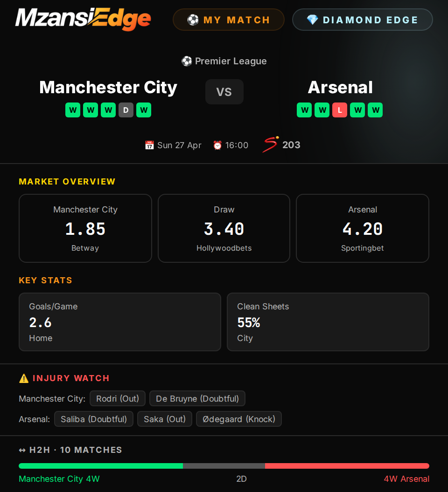
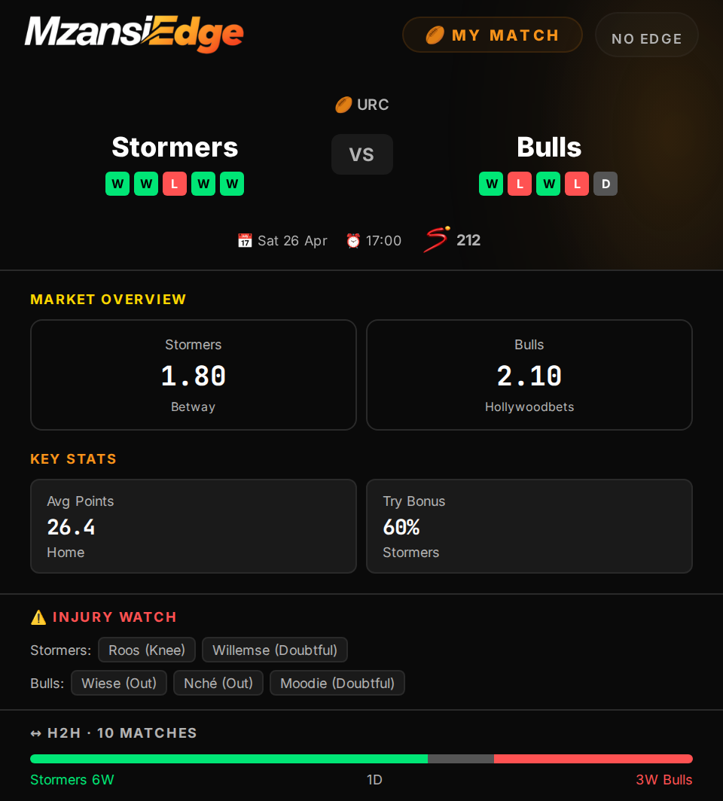
User's followed games. Logo + orange-bar + MY MATCHES title + summary header. Two sections: 🎯 EDGE AVAILABLE (matches with picks — tier-coloured left border + tier badge + team-name pick + bookmaker logo) and 📋 UPCOMING (raw H/D/A odds boxes for plain matches). No footer.
Design notes
- Glow type: brand-orange logo glow (centered behind the wordmark) — same recipe as
edge_picks/edge_summary. - Header: no background, no border-bottom. Inherits card
#0A0A0A. - Edge match rows: tier-coloured left-border + tier badge ("💎 EDGE" / "🥇 EDGE" etc.) on the right + team-name pick + bookmaker as text. Banned: bookmaker logos in this surface — the compact list row doesn't have room; logos get cramped and degrade legibility. Logos belong on detail surfaces (edge_detail, edge_summary's TOP PICK, edge_picks's pick chips) where there's vertical breathing room.
- Upcoming match rows: neutral grey left-border + 2-3 odds boxes (H / D / A) on the right.
- Section labels: 🎯 EDGE AVAILABLE (orange) and 📋 UPCOMING (grey). Both emojis are in the canonical set §5.
- Pick string = team name only. Match samples use "Manchester City" and "Kaizer Chiefs" — no markets, no spreads.
- No footer per universal §7. Trailing blank 13px.
Implementer agent — targets
- Edit
bot/card_templates/my_matches.html: replace header pattern with canonical orange logo glow (lift from/tmp/my_matches_canonical.html). Do NOT add.bk-logohere — bookmaker stays text-only on this compact list. - Acceptance:
latest/my_matches.pngmatchescanonical/my_matches_canonical.png. No footer. Trailing blank ≤14px.
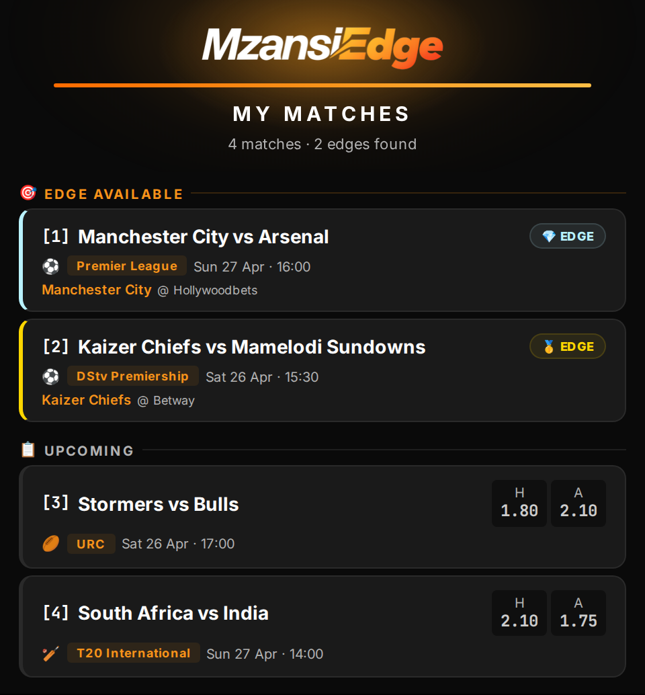
Locked-edge upsell. Sent when a user taps a tier they don't have access to. The card detects the user's tier and shows only the upgrade plans that would actually unlock the requested edge. Header gets the locked edge's tier glow (gold for Gold edges, cyan for Diamond), so users see immediately which tier they're being teased toward. No footer.
Design notes — tier-aware upgrade options
- Variant A — Bronze user → Gold edge:
upgrade_plans = [Gold (R99), Diamond (R199)]. 2-column grid. Both plans unlock Gold edges, so both are shown. - Variant B — Bronze user → Diamond edge:
upgrade_plans = [Diamond (R199)]. Single plan. Only Diamond unlocks Diamond edges. - Variant C — Gold user → Diamond edge:
upgrade_plans = [Diamond (R199)]. Visually identical to Variant B. Implementer differentiates via user state, not template. - Glow color = edge tier color, not user tier. The card teases the tier the user wants, so its glow comes from that target tier.
- Locked preview = frosted glass over glowing tier emoji:
- Behind layer (
.locked-bg): giant 200px tier emoji centered, withfilter: blur(14px)+drop-shadow(0 0 60px {tier_color}AA)so it reads as a tier-coloured aurora bleeding through frost. - Frost scrim (
.locked-frost):linear-gradient(180deg, rgba(10,10,10,0.45), rgba(10,10,10,0.62))— semi-transparent matte that lets the emoji's glow show through but darkens enough for foreground text to read. - Foreground (
.locked-foreground, sharp): centered 56px 🔒 padlock + "{TIER} SIGNAL LOCKED" label (16px) + "{N} confirming signals behind the blur" subtitle. All vertically centered. - Container
height: 230px,border-radius: 12px,overflow: hiddento clip the blurred emoji at the corners.
- Behind layer (
- Plan card pattern: tier-coloured left border + tier emoji/name (in tier color) + price (R99 / R199) + period (/ month) + perk line. Compact 2-row layout per plan card.
- No footer. Card terminates after the upgrade-options grid with 15px black breathing strip.
Implementer agent — targets
- Replace
bot/card_templates/tier_lock_upsell.htmlwith the canonical (lift from/tmp/tier_lock_upsell_canonical.html). Remove the existing complex blurred-preview area + banned emojis. - Update
card_data.build_tier_lock_upsell_data(or its current equivalent) to computeupgrade_plansbased on(user_tier, edge_tier):if edge_tier == "gold": plan_keys = ["gold", "diamond"] elif edge_tier == "diamond": plan_keys = ["diamond"] # Filter plans the user already has: if user_tier == "gold": plan_keys = [k for k in plan_keys if k != "gold"] - Each plan dict must include:
emoji,label(name),color,price(R99/R199),period("month"),perk(1-line description). - Acceptance: 3 distinct route paths (Bronze→Gold, Bronze→Diamond, Gold→Diamond) all render the same template; only the
upgrade_planslist differs.
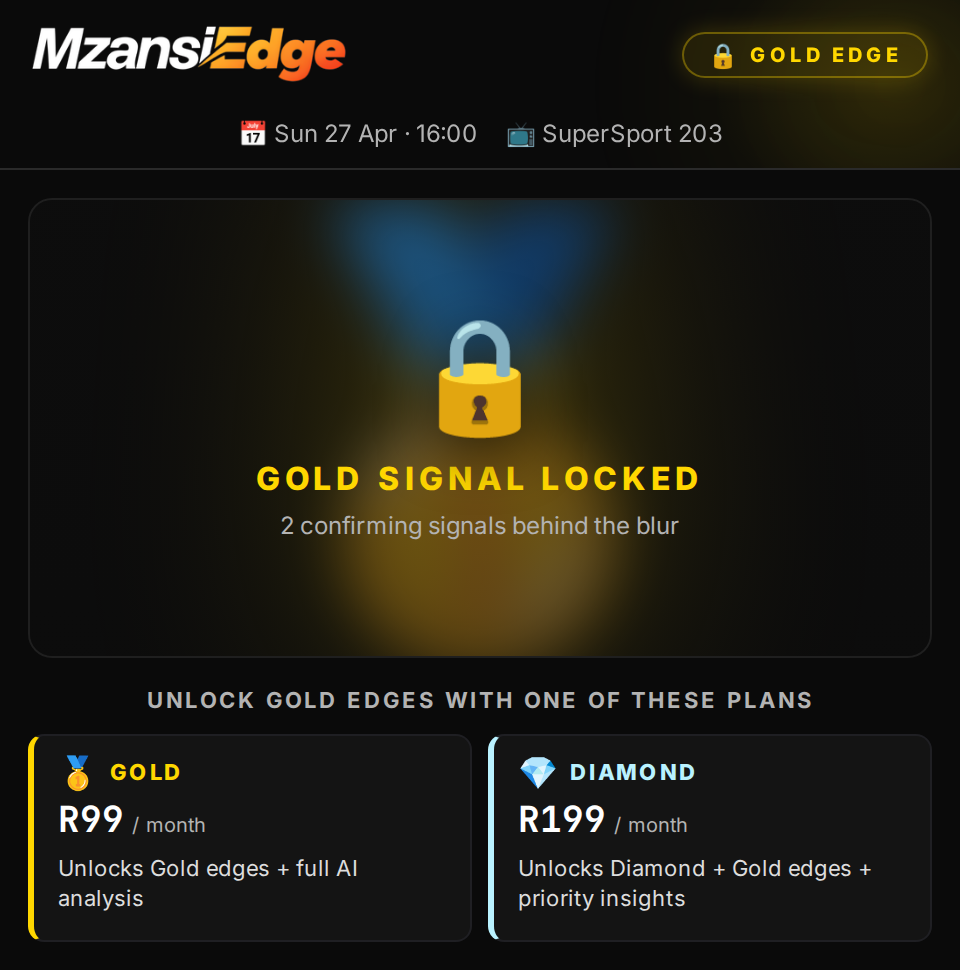

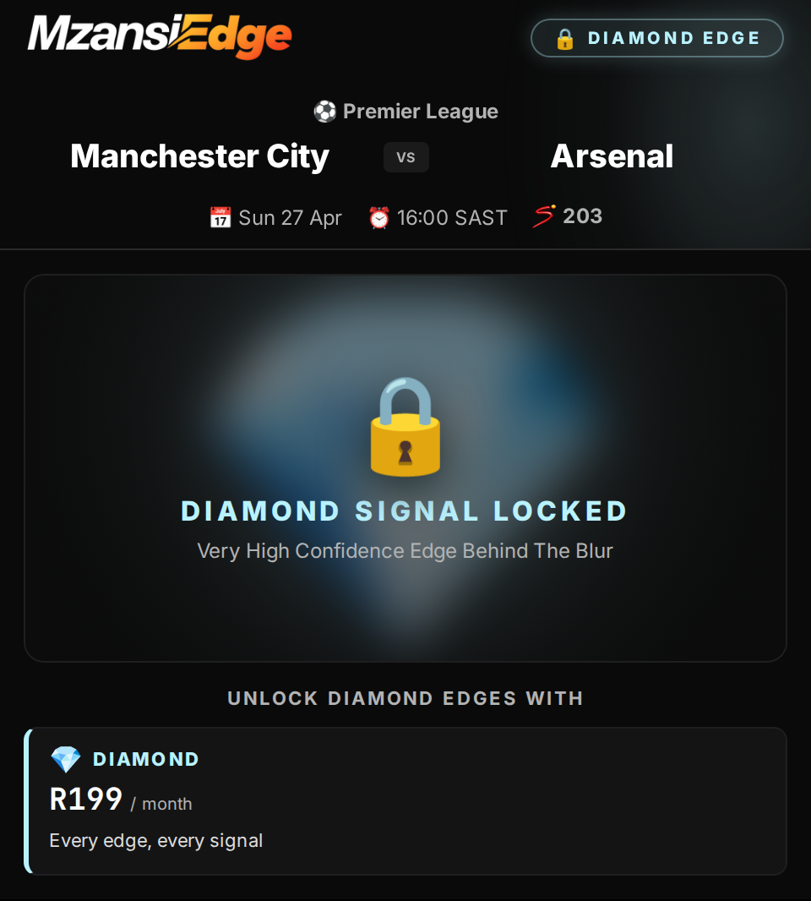
Single-tier filtered list. Sent on tier-drill from the index. Header layout is unique to this surface: tier emoji + tier label + pick count on the left, MzansiEdge wordmark on the right, tier-color right-side glow behind the wordmark. Pick rows are tier-coloured (left-border + accents) with team-name picks and bookmaker logos. No footer. Card was previously framed (border + shadow + border-radius) — flattened to the canonical card style.
Design notes
- Glow type: tier-color (this is a single-tier surface — Diamond / Gold / Silver / Bronze each get their own glow). Same dual-layer right-side recipe.
- Card flattened: removed
border: 1px solid #2A2A2A,border-radius: 14px, andbox-shadowfrom.card. Matches the canonical card style (no frame). - Wordmark logo: 28px (was 22px in prod, opacity 0.9 — both replaced with prod-canonical 28px full-opacity).
- Unique header layout: tier-label-left + wordmark-right. The tier label IS the title for this surface — wordmark serves as brand stamp (not the centerpiece). Acceptable departure from the standard logo-top pattern.
- Pick string = team name only (e.g. "Kaizer Chiefs", "Liverpool", "Real Madrid", "Stormers"). Sample data follows the new rule.
- Bookmaker logos at 14px in pick rows.
- No footer per universal §7. Card terminates after the last pick row with 11px black breathing strip.
Implementer agent — targets
- Edit
bot/card_templates/tier_page.html: flatten.cardstyling (no border/border-radius/shadow); replace tier-header gradient bg + border-bottom with tier-color glow pattern (lift from/tmp/tier_page_canonical.html); add.bk-logoimg inside.pick-bookie; remove footer block + footer CSS. - Update
bot/card_data.py:build_tier_page_datato injectbookmaker_logo_b64on each pick. - Acceptance:
latest/tier_page.pngmatchescanonical/tier_page_canonical.png. No footer. Trailing blank ≤14px logical.
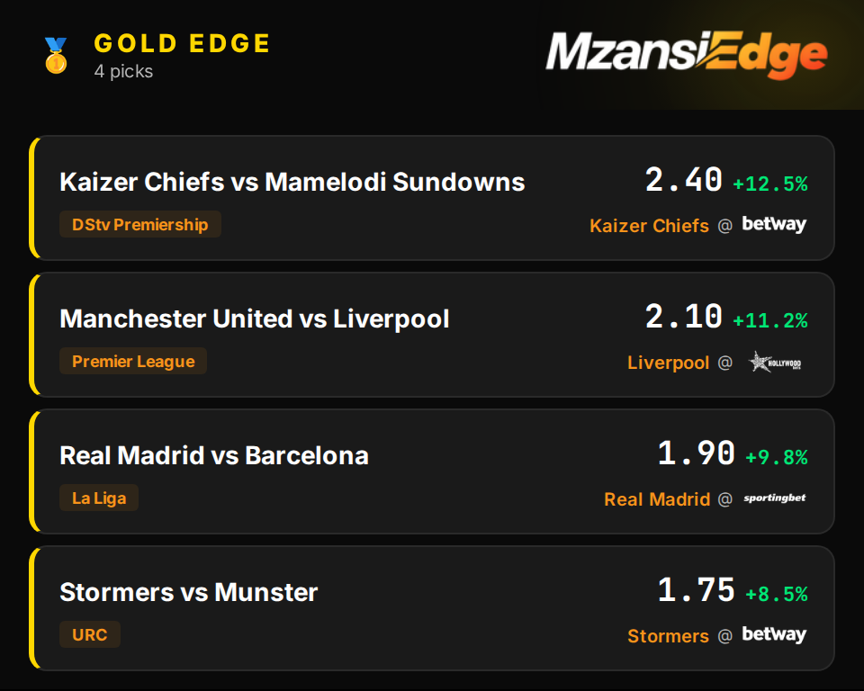
Morning digest summary card. Sent in the daily teaser flow. Header logo + brand-orange right-side glow, "MORNING DIGEST" + "TODAY'S EDGE PICKS" titles, 4 tier-pill counts (Diamond/Gold/Silver/Bronze), and a TOP PICK block highlighting the highest-EV pick (tier-coloured left-border + odds + bookmaker logo). No footer.
Design notes
- Glow type: brand-orange (multi-tier surface — same recipe as edge_picks).
- Banned emoji removed: 🌅 was on "MORNING DIGEST" — outside the canonical emoji set (§5). Header label now reads plain "MORNING DIGEST".
- Top pick retains tier-coloured accents (left-border + odds colour) for the picked tier — that's per-element tier signalling, allowed alongside the multi-tier brand-orange header glow.
- Bookmaker logo at 14px in the "@ {logo}" line below the odds. Source same as edge_picks/edge_detail.
- No footer per universal §7. Card terminates after the top_pick block (~19px bottom-padding breathing room from
top-pick-wrapper { padding: 18px 16px }).
Implementer agent — targets
- Edit
bot/card_templates/edge_summary.html: replace header block with canonical glow pattern (lift from/tmp/edge_summary_canonical.html); remove 🌅 from MORNING DIGEST label; add.bk-logoimg inside.pick-bookmaker; remove footer block + footer CSS. - Update
bot/card_data.py:build_edge_summary_datato injecttop_pick.bookmaker_logo_b64(load fromassets/bookmakers/logo-*.png). - Acceptance:
latest/edge_summary.pngmatchescanonical/edge_summary_canonical.png. No 🌅 emoji. No footer.
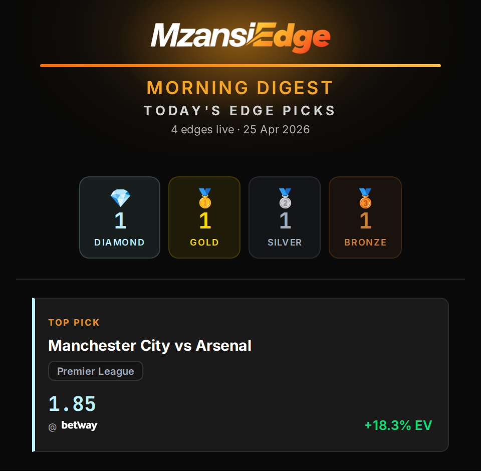
Pick list shown after tapping Hot Tips. Pre-existing tier-summary header preserved (💎N · 🥇N · 🥈N · 🥉N — N edges today). Brand-orange right-side header glow (multi-tier surface — not tier-coloured). Pick rows show team-name picks (no markets/spreads), real bookmaker logos, SVG-arrow prize lines. No footer. Locked Diamond rows preserve "💎 Diamond Edge / 🔒 Upgrade to unlock" pattern.
Design notes
- Glow type: brand-orange (this is a multi-tier surface, not bound to one tier). Right-side only, single-radial-per-layer recipe with
#F7931Aalphas4D / 22(Layer A) and1A / 0D(Layer B screen). - Pick string = team name only. Sample data uses "Manchester City" / "Kaizer Chiefs" / "Stormers" / "South Africa" — never markets ("BTTS"), spreads ("-4.5"), or nicknames ("Proteas").
- Bookmaker logos at 14px height in the per-pick "@ {logo}" position. Source:
/home/paulsportsza/assets/bookmakers/logo-*.png, pre-resized to 36px for retina. - Prize-line arrow: SVG (path
M1 6 H10 M7 3 L10 6 L7 9) at 10×10 box, vertically centered between R200 and R{return}. Banned: Unicode→(off-baseline). - Header — no background, no border-bottom. Glow is the only signal. Orange-bar gradient is preserved as the signature accent for list-view surfaces (kept from
edge_picks_index_v1for visual continuity). - No footer. Card terminates after last pick group with ≤14px black breathing strip.
Implementer agent — targets
- Edit
bot/card_templates/edge_picks.html: replace header block with canonical glow pattern (lift from/tmp/edge_picks_canonical.html); add.bk-logoimg inside.pick-bookie; replace Unicode→in.pick-prize-linewith the canonical 12×12 SVG arrow. - Update
bot/card_data.py:build_edge_picks_datato injectbookmaker_logo_b64per pick (load fromassets/bookmakers/logo-*.png). Pick string normalized to team-name only. - Acceptance:
latest/edge_picks.pngmatchescanonical/edge_picks_canonical.png. No footer present. Trailing blank ≤14px logical.
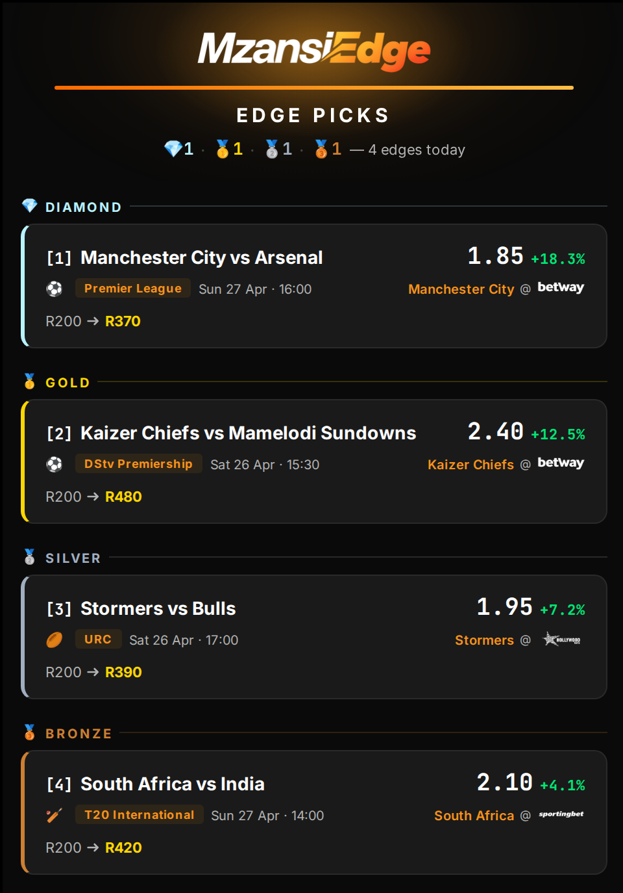
Full single-pick detail card. Sent on edge:detail:{match_key}. Hero surface for any tier.
Header-only tier-glow (logo + tier badge + EV row), brand bar, matchup with form rows, SS DStv badge,
THE PICK section (team-name pick, 18px bookmaker logos), bookmaker chip row, larger edge signals grid (13px),
H2H bar, capped verdict. No confidence bar; pick is the team name only; no card border.
Design notes (locked constraints)
- Pick string = team name only. We only cover wins for now. Banned: "X to Win" / "Both Teams to Score" / "X -4.5" / nicknames ("Proteas" → "South Africa"). The pick row reads exactly the canonical team name.
- Header MUST follow the universal pattern (§ Design System 1) — logo + header-only tier-glow + tier badge + EV display. Tier color drives glow, badge, EV.
- Glow stays in the header. Three stacked radials inside
.header-glow { inset: 0 }. Brand-bar, matchup, and meta-bar stay clean. - No card border / no outer ambient glow. The card frame is borderless; tier signal lives in the header row.
- Bookmaker chips render real logo PNGs at 18px height; pick chip highlighted with
{tier_color}border +{tier_color}20bg. Chipfont-size: 12px / padding: 5px 9px / gap: 7px. - Channel string MUST be
"SS <league> (DStv N)"so the SS badge fires (not text fallback). - Verdict section capped at 130px with 4-line clamp. Banned:
flex-grow: 1without max-height — caused the bleed-past-620px bug. - No confidence bar. The visual bar is removed;
confidence_tierdata field is preserved (used by verdict-prose generation incard_data.py:550+test_verdict_adversarial_*.py). - Edge signals grid — compact: section header 9px, signal labels 11px, dot 7px with 4px halo when active. Section padding-top 16px so the dividing line above sits lower (gives the bookmaker chip row breathing room).
- H2H bar segments: home #00E676, draw #444, away #FF5252.
Implementer agent — targets
- Edit
bot/card_templates/edge_detail.html: replace header block with canonical pattern (lift from/tmp/edge_detail_canonical.html); cap.verdict-sectionwithmax-height: 130px+ line-clamp; bump.bk-logo { height: 18px }+ chipfont-size: 12px / padding: 5px 9px; delete the confidence-bar block (~10 LOC removed). Risk: none — Jinja silently skips fields that aren't rendered;confidence_tierdata flow stays intact for verdict prose. - Update
bot/card_data.py:build_edge_detail_data: injectlogo_b64per bookmaker intoall_odds(load fromassets/bookmakers/logo-*.pngatmax_height=40); ensure channel passed downstream as"SS X (DStv N)"shape. Risk: none — pure additive field on existing dict. - Acceptance:
latest/edge_detail.pngmust matchcanonical/edge_detail_{tier}.pngfor the corresponding tier-coloured render. - Effort: ~30 LOC Python + ~50 LOC HTML/CSS, ~1 hour. No callback / DB / schema changes.
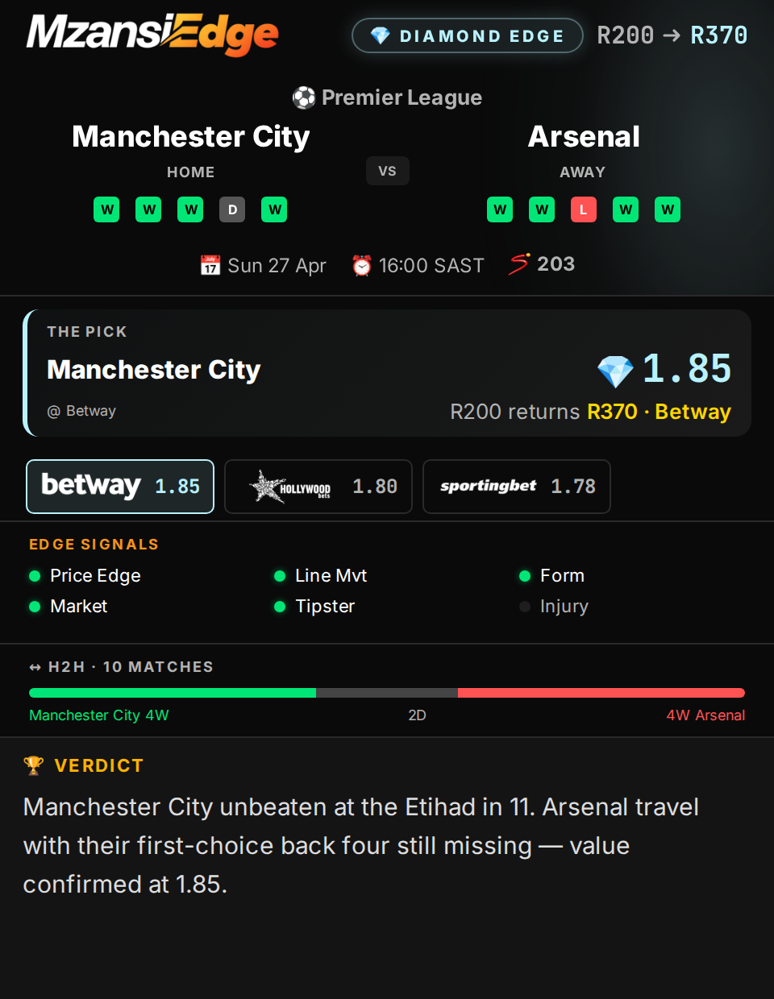
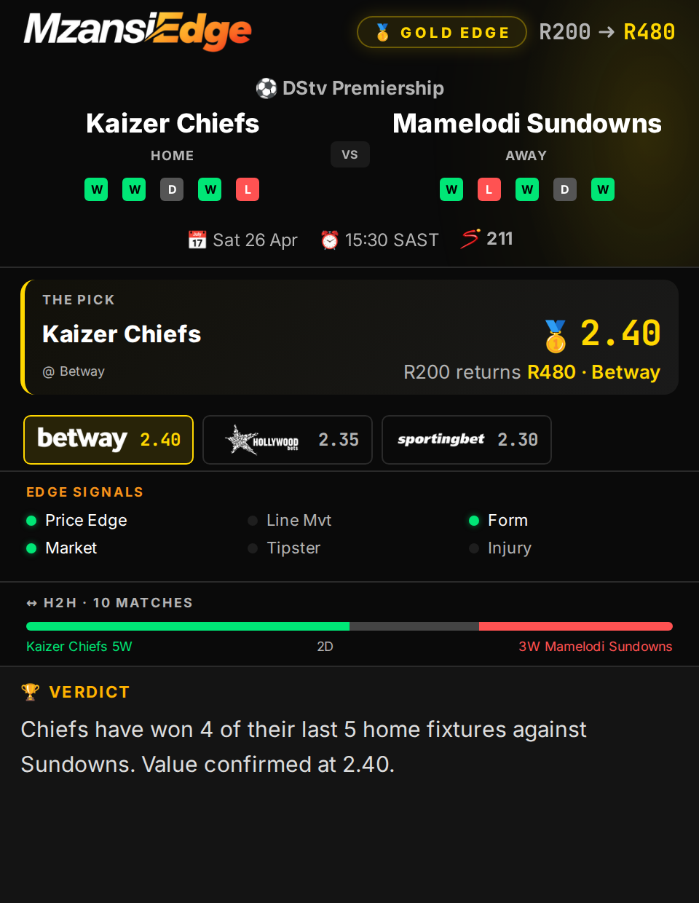
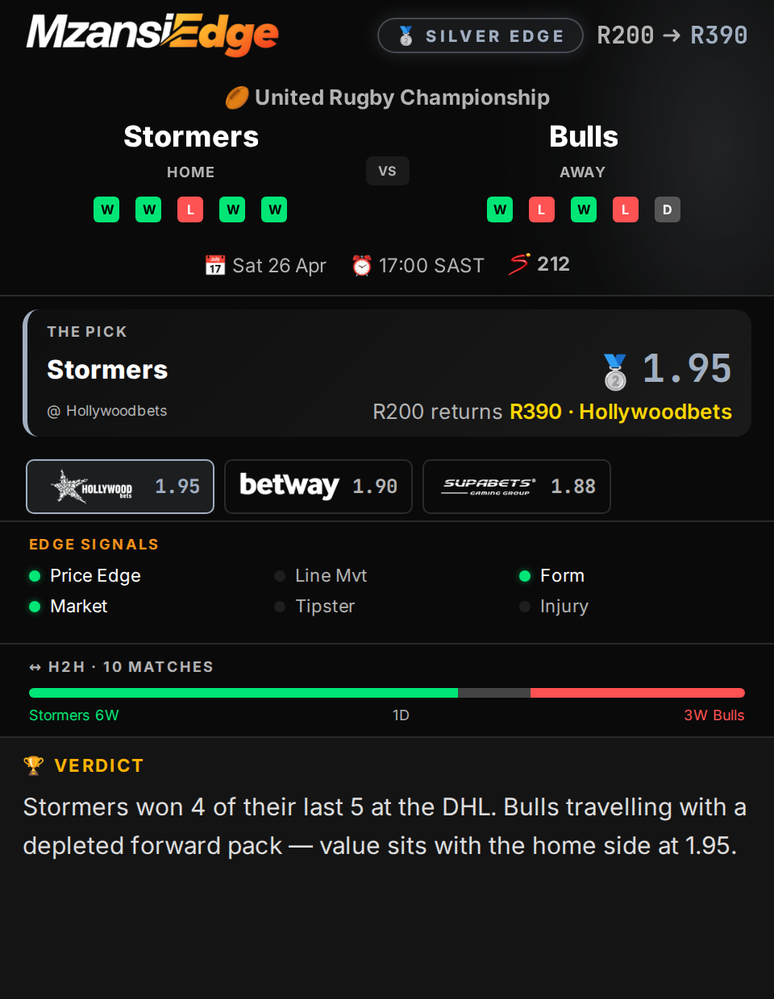
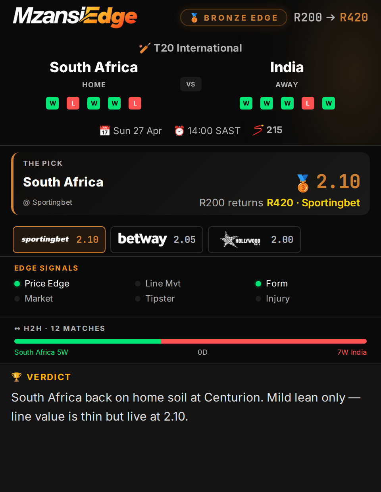
Full AI breakdown card. Sent on the AI deep-dive flow. 4 prose sections (Setup / Edge / Risk / Verdict) wrapped in the unified header system: logo + right-side tier-glow + match meta with SS badge. No footer — card terminates immediately below the Verdict block. Section left-borders + tag colors are fixed (gold/green/red), matching live prod — tier-coloured signals live only in the header glow + tier badge + EV display.
Design notes (locked constraints)
- Header pattern matches
edge_detail.html(§ Design System 1) — same logo + right-side-only tier-glow + tier badge. - EV % shown in tier color in the header right.
- Match title: full team names always (max 2 lines) — never truncate "Mamelodi Sun..." or similar.
- Meta bar: league emoji, date, time, SS DStv badge — separated by 14px gap, centred, on top + bottom borders.
- Section left-borders are FIXED (matches live
bot/card_templates/ai_breakdown.html): Setup =#F5B800(gold), Edge = green, Risk = red, Verdict =#F5B800with subtlergba(245,184,0,0.05)bg gradient. Banned: tier-colouring section borders. - Section tags are FIXED colors (matches live): Setup
tag-gold "CONTEXT", Edgetag-green "+X.X% EV", Risktag-red "CAUTION", Verdicttag-gold "{verdict_tag}". - verdict_tag legitimate values (from
bot/card_data.py:1199-1213):STRONG BACK / BACK / MILD LEAN / SPECULATIVE / MONITOR / VERDICT. Banned:"LEAN"alone (must be"MILD LEAN"),"PASS", or any value outside the legitimate set. - No footer. Card closes off immediately after the Verdict block. The standard
mzansiedge.co.za · Bet responsibly · 18+footer is omitted on this surface. - Adaptive height (LIST variant) —
card_renderer.py:40JS-measures content and clips the card to actual height. Total heights vary per render: Diamond 618 / Gold 578 / Silver 538 / Bronze 538 logical px. - Card terminates with a small black breathing strip below the Verdict section:
.section { padding: 10px 13px 8px }— verdict text breathes 8px inside the grey section bg (#141416).sections { padding: 10px 16px 10px }— card extends 10px past the section, showing the card bg (#0a0a0b ≈ pure black) as a clean black breathing strip before the card edge
.sectionsbottom padding (verdict touches card edge — too tight) AND large.sectionsbottom padding (negative space).
Implementer agent — targets
- Replace
bot/card_templates/ai_breakdown.htmlwith canonical version (lift from/tmp/ai_breakdown_canonical.html) — keeps the 4-section structure, adds unified header + meta bar, removes the footer entirely, fixes section borders/tags to prod-spec colors. - Update
bot/card_data.py:build_ai_breakdown_datato provide:tier,tier_emoji,tier_label,tier_color,header_logo_b64,ss_icon_b64,channel_dstv_num,league,sport_emoji,date,time,verdict_tag. (Nofooter_logo_b64needed — footer dropped.) verdict_tagderivation already exists atcard_data.py:1199-1213— producesSTRONG BACK / BACK / MILD LEAN / SPECULATIVE / MONITOR / VERDICT. No change needed.- Acceptance:
latest/ai_breakdown.pngmust matchcanonical/ai_breakdown_{tier}.pngfor the corresponding tier render. No team-name truncation, no footer, fixed badge colors.
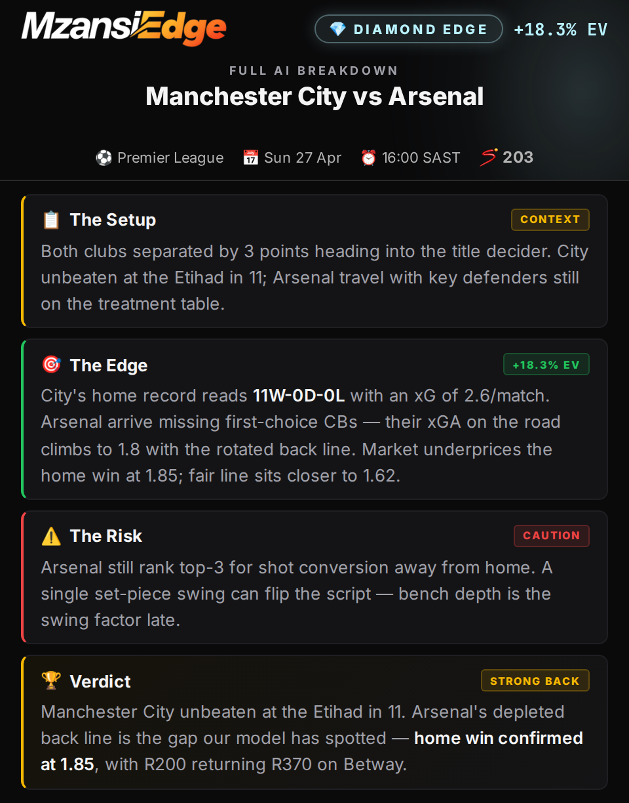
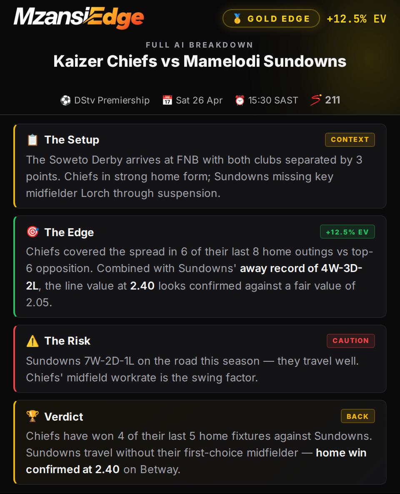
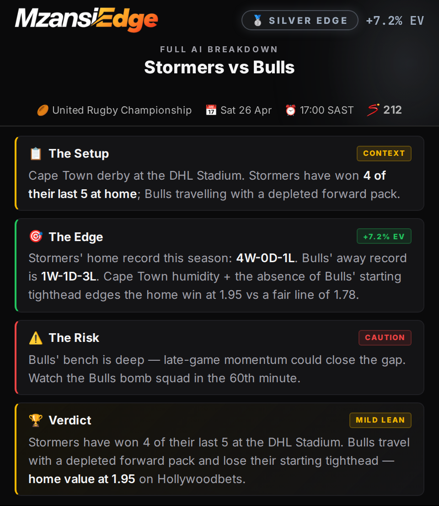
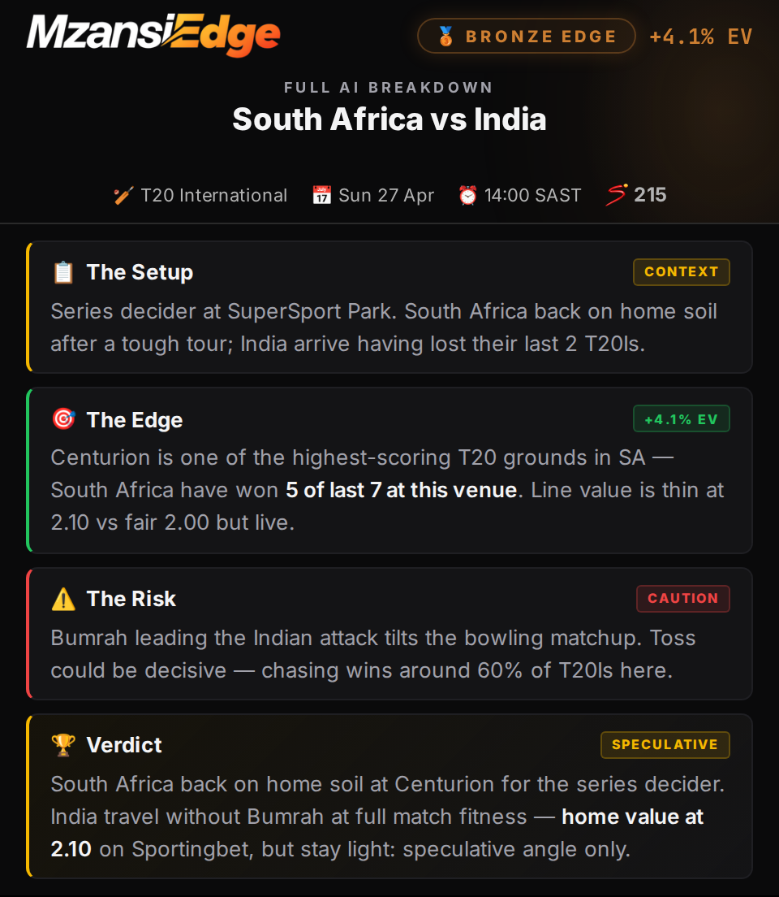
Edge Picks tier index card. Image-first surface sent on the hot:go callback.
Shows all four tiers (Diamond → Gold → Silver → Bronze) with live counts. Locked tiers
show 🔒 + "Upgrade to unlock"; unlocked tiers show a tier-coloured tick to the right of
the count. The user's highest-unlocked tier is highlighted as "★ Your default".
Five rendered states below — one PNG per (user_tier × locks) combination.
Design notes (locked constraints)
- Header matches canonical
edge_picks.htmlheader:mzansiedge-wordmark-dark-transparent.pngat height 32px, orange brand bar (3px gradient#FF6B00→#F7931A→#FFBE45), "EDGE PICKS" title (white, letter-spacing 3px), per-tier count strip💎N · 🥇N · 🥈N · 🥉N — N edges todaywith each tier emoji+count colored by canonicaltier_color. - Tier rows in rank order: Diamond → Gold → Silver → Bronze.
Border-left 3px in
tier_colorfor unlocked, neutral grey#2A2A2Afor locked. - Default highlight on user's highest unlocked tier:
gradient bg
linear-gradient(90deg, {tier_color}15 0%, #1A1A1A 60%)+ orange★ Your defaultbadge (#F7931A). - Locked rows: medal emoji desaturated to
filter: grayscale(0.6); opacity: 0.55, background#131313, secondary text colour#B3B3B3, lock icon 🔒 on the right. - Unlocked tick: SVG path
M4 12.5 L10 18.5 L20 6atstroke-width: 3.5, rounded caps + joins,stroke="{tier.color}". 22×22 px box, sits to the right of the count block. - Live count always vertically aligned: big number (
JetBrains Mono, 22px, 700) over small "LIVE" label (uppercase, 9px, letter-spaced). No emoji prefix on the count. - Empty state: header strip shows zeros, body shows centred 🌙 +
"No live edges right now / Check back soon · we scan every 15 minutes". Tier rows dimmed to
opacity: 0.5; unlocked Bronze keeps its tier-colour tick (access semantics independent of count). - Footer REMOVED per universal law §7. Card terminates after the tier list with a 10px black breathing strip below the last row.
.tier-list { padding: 14px 14px 10px }. - Banned: emoji prefix on the count, orange-gradient tick (only the brand bar uses gradient), wordmark text fallback when the logo image is available.
Implementer agent — targets
- New template:
bot/card_templates/edge_picks_index.html(lift from/tmp/edge_picks_index_v1.html; ≈ 260 LOC HTML + CSS) - New data builder:
bot/card_data.py→build_edge_picks_index_data(user_tier, tier_counts) -> dict(≈ +95 LOC) - Handler swap:
bot/bot.py:_do_hot_tips_flowat L12889 (warm) / L12944 (cold) / L13088 (stale-revalidate) — mark with# A2-INDEX-SWAP - New callbacks:
hot:tier:{bronze|silver|gold|diamond}atbot.py~L1935 (≈ +60 LOC) - Gating: call
tier_gate.get_edge_access_level(user_tier, edge_tier)per tier — do not duplicate gate logic - Kill switch:
HOT_TIPS_INDEX_ENABLEDenv flag → falls back to_do_hot_tips_flow_legacy - Contract tests:
tests/contracts/test_edge_picks_index_render.py,test_hot_tier_callback_routing.py,test_locked_tier_button_routes_to_upgrade.py(5 + 5 + 12 cases) - Acceptance:
latest/edge_picks_index.png(variant matrix) byte-equivalent to the canonical PNGs below within OCR tolerance - Ship order: after FIX-HOT-TIPS-TIER-COVERAGE-01 has soaked 24–48h
- Reference:
~/reports/INV-HOT-TIPS-A2-IMPL-DESIGN-01-orchestrator.md+ Notion brief34dd9048d73c81f1a72af81ef4cf48f2
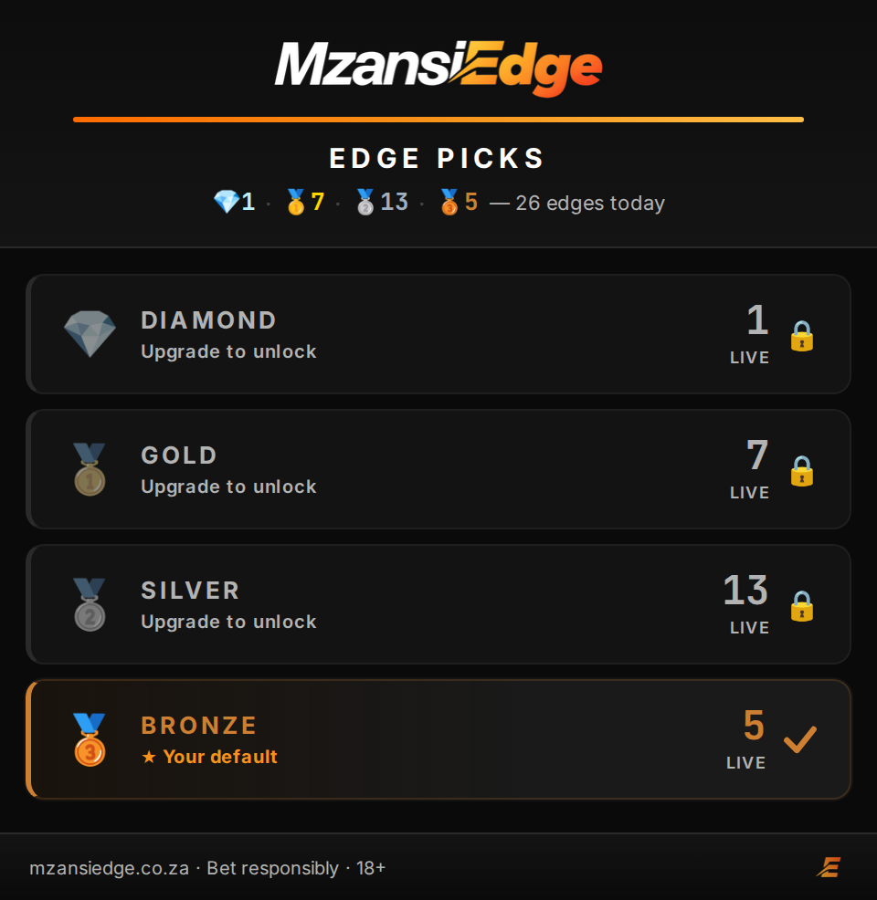
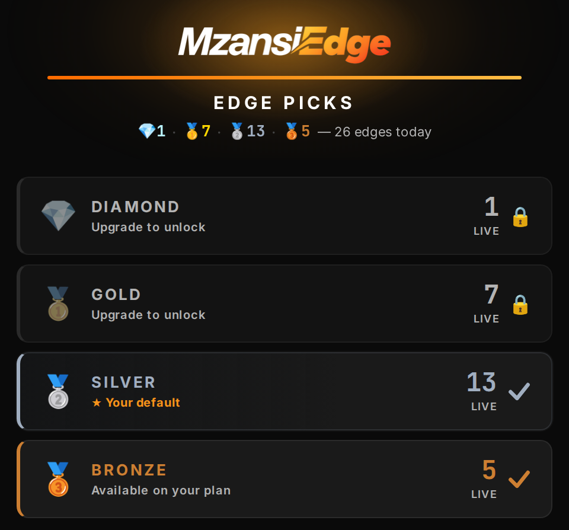
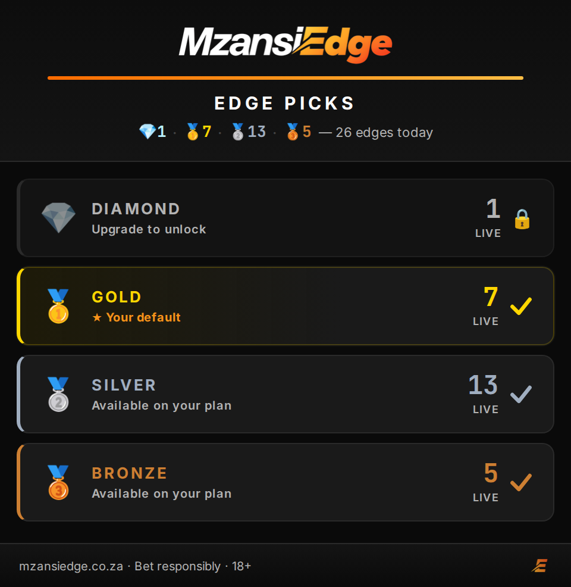
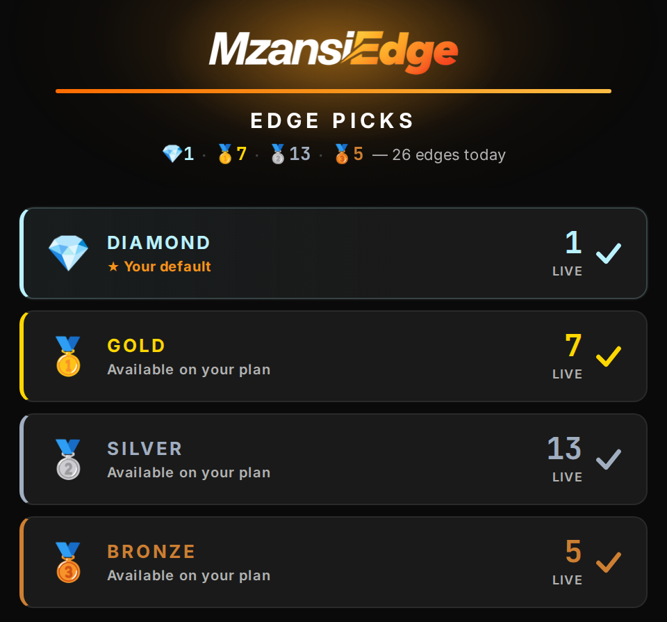
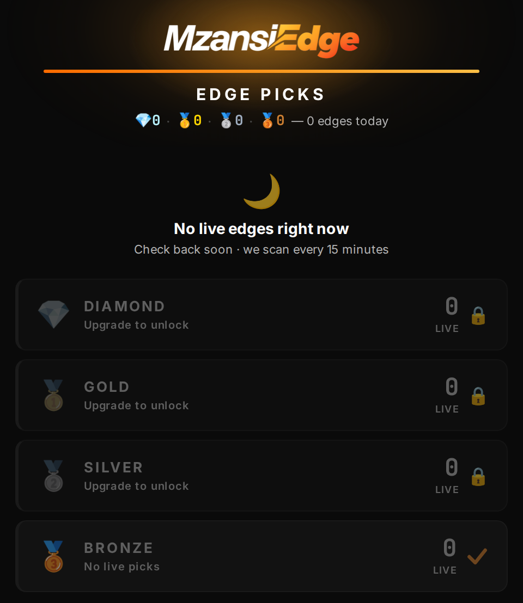
Plan picker — three tiers (Bronze / Gold / Diamond) plus optional founding-member banner.
Conversion-critical surface: shown on /subscribe, upgrade flows, and tier-locked CTAs.
Header gets the canonical brand-orange centred logo glow (this is a non-tier surface — every tier user can land here).
Plan tiles use tier-coloured left borders + bullet markers; Diamond grows to fill remaining space so the card always
lands tight on 620px regardless of feature-list length. Founding banner has its own internal orange glow accent.
No footer.
Design notes
- Glow type: brand-orange (non-tier surface — same dual-layer centred recipe as
edge_picks_index,my_matches,edge_summary). - Header pattern: 32px logo, 3px orange-bar, 15px tracked "PLANS" title, 11px subline ("Choose your edge — every tier finds value"). Matches canonical header standard exactly.
- Plan tile borders: each tier gets its own left-border colour (
#CD7F32Bronze,#FFD700Gold,#B9F2FFDiamond) + matching bullet markers. Per-element tier signalling, allowed alongside the brand-orange header glow. - Diamond fills: Diamond plan uses
flex: 1so it absorbs any remaining vertical space — keeps the founding banner anchored to the bottom and the card tight on 620px. - Founding banner glow: internal blurred radial-gradient (orange) on the right edge of the banner. Subtle premium accent — does not double up with the header glow.
- Bronze price: rendered smaller/dimmer ("Free" at 12px
#888) so it doesn't compete with paid-tier prices. - No footer per universal §7. Card terminates with founding banner (or last plan tile if banner absent).
Implementer agent — targets
- Replace
bot/card_templates/sub_plans.htmlwith the canonical (lift from/tmp/sub_plans_canonical.html). Replace existing header block with the canonical brand-orange glow pattern; replace plain coloured borders with left-border accent pattern; add internal glow div to.founding-banner; remove old gradient-background.headerstyling. bot/card_data_adapters.py:build_sub_plans_dataalready emits the right shape (plans[].tier,tier_emoji,monthly_price,annual_price,annual_savings,features+founding_offer). No data-side changes needed.- Acceptance:
latest/sub_plans.pngmatchescanonical/sub_plans_canonical.png. Brand-orange centred logo glow visible. Tier-colour left borders on each tile. Diamond tile fills remaining space. No footer. Trailing blank ≤14px.
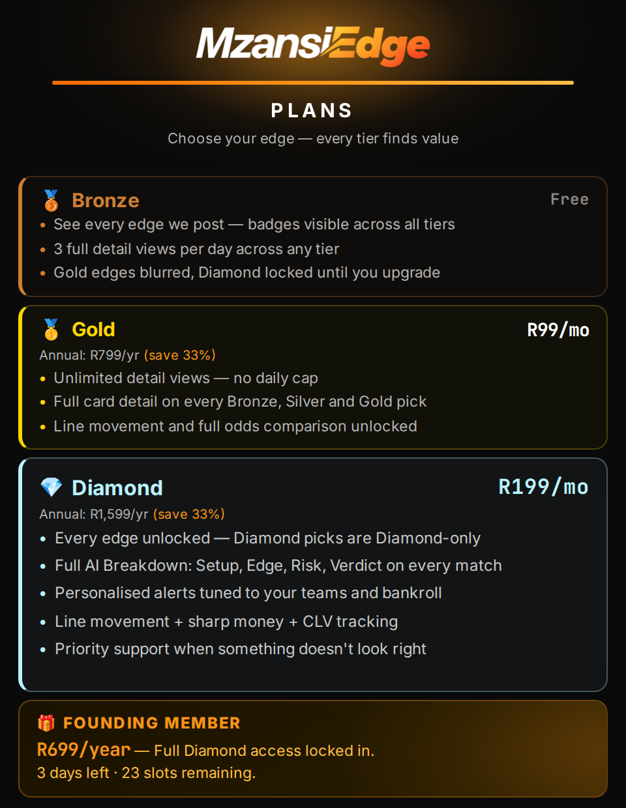
Pre-checkout confirmation card. Sent immediately before the user taps "Pay Now" — shows the chosen plan, price, payment reference, and trust signals. Conversion-critical: this is the last screen between intent and payment. Header gets the canonical brand-orange centred logo glow. Reference block has a brand-orange left-border accent so the reference reads as the "thing to verify". A green-padlock + "Powered by Stitch · 256-bit TLS" trust line sits below the instruction. Founding variant adds an internal-glow banner that anchors the rate-locked-in promise. No footer.
Design notes
- Glow type: brand-orange (non-tier surface — every plan funnels through this card). Same dual-layer centred recipe.
- Header changes from prod: removed
linear-gradient(180deg, #0D0D0D, #141414)background andborder-bottom: 1px solid #2A2A2A— both replaced by the canonical glow pattern. 32px logo (was 30px). 15px tracked title (was 14px). Added 11px subline ("Secure checkout — tap Pay Now to complete"). - Price: 38px JetBrains Mono, brand-orange (
#F7931A). Letter-spacing tightened (-0.5px) so long values like "R1,599/year" don't break the line. - Reference block: 3px brand-orange left-border + 10px corner radius. Visually marked as the "important" element — replaces the flat full-border treatment in prod.
- Trust line: green padlock 🔒 + "Powered by Stitch · 256-bit TLS". Stitch wordmark white-bold; TLS detail dim. Builds payment trust without being noisy. (🔒 emoji is canonical — already used on tier_lock_upsell.)
- Founding variant: same internal-orange-glow treatment as
sub_plansfounding banner. Bold "Founding Member" hook + plain renewal-rate explanation. - No footer per universal §7. Card terminates after the trust line (or founding banner if applicable).
Implementer agent — targets
- Replace
bot/card_templates/sub_payment_ready.htmlwith the canonical (lift from/tmp/sub_payment_ready_canonical.html). Remove thelinear-gradientheader background andborder-bottom; insert the.logo-glow+.logo-glow-screendivs; add subline div; add trust line below instruction; replace founding-note with the internal-glow variant. bot/card_data_adapters.py:build_sub_payment_ready_dataalready emits the right shape (plan_name,price_display,reference,is_founding). No data-side changes needed.- Acceptance:
latest/sub_payment_ready.pngmatchescanonical/sub_payment_ready_canonical_standard.png(or_foundingif founding flow). Brand-orange centred glow visible. Reference block has orange left-border. Trust line "Powered by Stitch · 256-bit TLS" present below instruction. No footer. Trailing blank ≤14px.
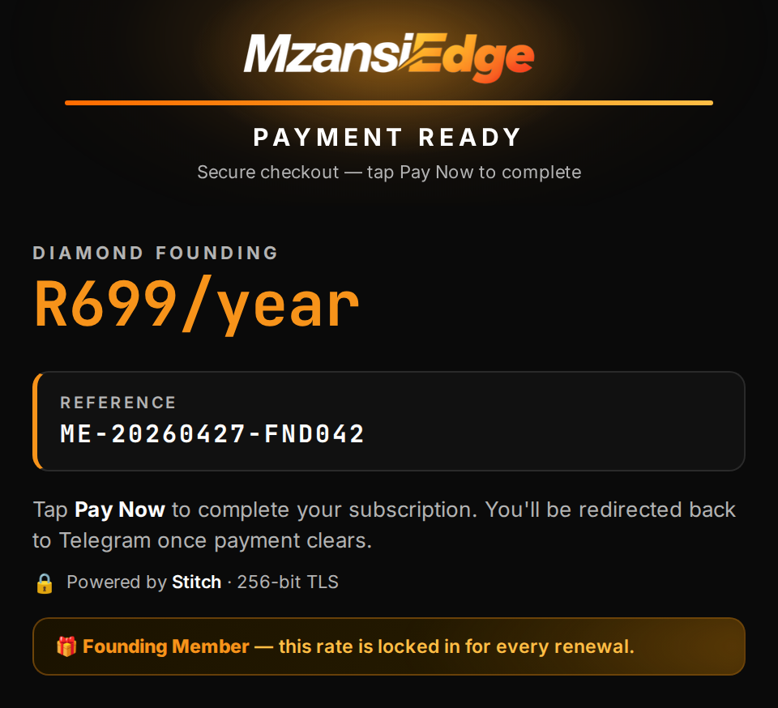
Post-checkout success card. Sent immediately after Stitch webhook confirms payment — the user just paid for
either Gold or Diamond and this is their entry-point celebration. Tier-specific (only ever Gold or Diamond),
so this surface gets a tier-color logo glow (yellow for Gold, cyan for Diamond) — same dual-layer
centred recipe as tier_lock_upsell and tier_page. Plan block has matching tier-color
left border + soft tier wash. A green-circle tick sits inline with the title for clear success affirmation.
Trailing instruction "Use /status any time to view your plan" carries the orange brand-token (one of two surfaces
where brand-orange touches a tier-color card — kept compact, single line, no border-top divider). No footer.
Design notes
- Glow type: tier-color (this is a tier-locked surface — the user JUST paid for that tier). Gold uses
#FFD700; Diamond uses canonical#B9F2FF(cyan, not the prod purple-blue#7B8CDE). - Single template, two tier classes:
.card.tier-gold/.card.tier-diamondset CSS variables (--tier-color,--tier-color-soft,--tier-color-glow). Halves the template surface vs the prod two-block approach. - Title with inline tick: 15px tracked tier-color "PAYMENT CONFIRMED" + 18px green circle
#5DD68Fwith white tick. Replaces the prod ✅ emoji which read as awkwardly pasted. - Plan block: tier-color left-border + soft tier wash (radial gradient blurred from left edge). Tier emoji at 28px (was 36px in prod — too big), 14px tracked tier-coloured plan-label, 32px JetBrains Mono price.
- Access row: expiry date in tier-color JetBrains Mono. Subtle but emphasises the "until" nature.
- Trailing instruction: 11.5px text, no border-top divider (prod had one — that read as a footer).
/statusin orange-pill code styling. Centred, low-padding. - No footer per universal §7. Card terminates with the instruction line.
Implementer agent — targets
- Replace
bot/card_templates/sub_payment_confirmed.htmlwith the canonical (lift from/tmp/sub_payment_confirmed_canonical.html). Collapses the two header/body blocks into one tier-classed structure. Removeslinear-gradient(180deg)backgrounds,border-bottomrules, and theborder-topon the footer-note. bot/card_data_adapters.py:build_sub_payment_confirmed_dataalready emits the right shape (first_name,plan_label,tier,tier_badge,amount_zar,expires_at_human,renewal_cadence). No data-side changes needed.- Acceptance:
latest/sub_payment_confirmed.pngmatchescanonical/sub_payment_confirmed_canonical_gold.pngor_diamond.pngby tier. Tier-color logo glow visible. Plan block has tier-color left-border + soft tier wash. Inline green-circle tick replaces ✅ emoji. No border-top above the/statusinstruction. No footer. Trailing blank ≤14px.
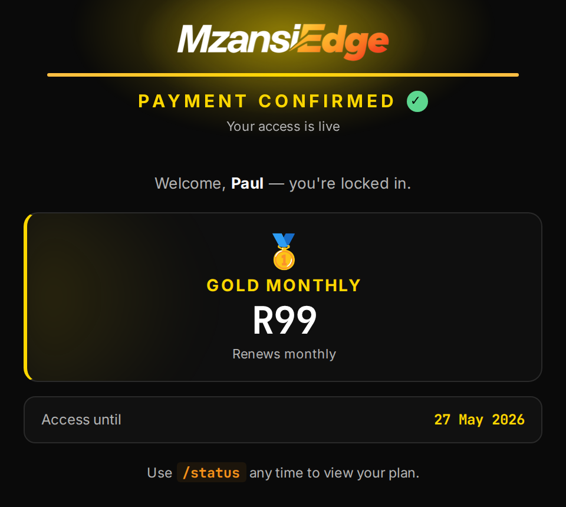
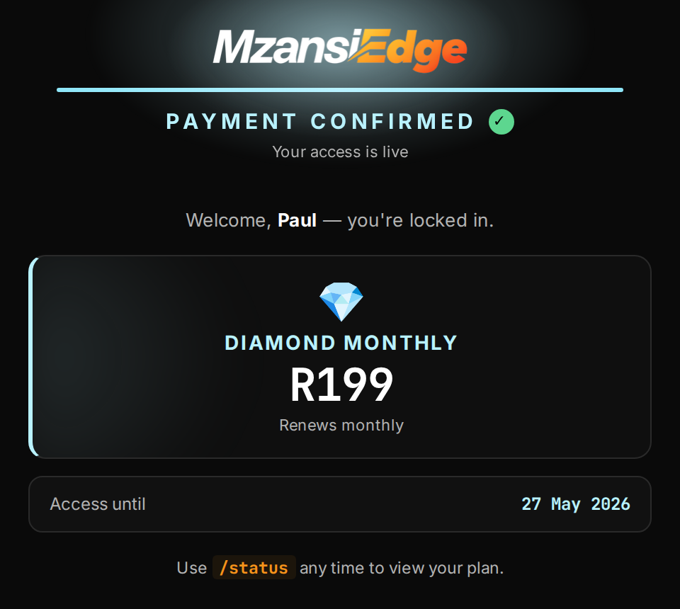
Payment failure card. Sent when Stitch returns an error or webhook reports a decline.
Emotionally-loaded surface: the user just attempted to pay and it didn't work. The card
acknowledges clearly without panicking — brand-orange logo glow (canonical non-tier),
with a discrete red accent reserved for the error elements only (red-circle alert glyph
next to the title, red-bordered error box). Subline "We couldn't complete your payment"
replaces the prod's bare title-only header. Support handle rendered as a code-pill so
it visually matches the /subscribe command pill in the trailing CTA. No footer.
Design notes
- Glow type: brand-orange (non-tier surface — error happens to anyone). Red is reserved for the error semantic only — keeps the card from feeling alarmist.
- Header changes from prod: removed
linear-gradient(180deg, #1A0A00, #1F1000)background andborder-bottom: 1px solid #F7931A40. Restored white title (#FFFFFF, was#FF6B00orange) — strong but neutral. Bar is canonical orange gradient (was red→orange). - Inline alert glyph: 18px red circle
#FF5252with white "!" — matches the green-tick pattern onsub_payment_confirmed. Consistent semantic-affirmation language across the success/error pair. - Error box: red left-border
#FF5252+ soft red wash (radial gradient blurred from left edge). Same architecture as the orange-accent reference block onsub_payment_ready. - Support handle as code-pill: orange code-pill styling matches the
/subscribecommand in the trailing instruction. Visual consistency for "things you can tap/copy". - Removed icon-above-box layout: prod had a 40px ⚠️ emoji centered above the error box — clunky and oversized. Replaced with the inline 18px red-circle glyph in the title.
- No border-top divider: prod had
border-top: 1px solid #1E1E1Eon the cta-hint (read as a footer). Removed — instruction sits with margin only. - No footer per universal §7. Card terminates with the trailing instruction.
Implementer agent — targets
- Replace
bot/card_templates/sub_payment_error.htmlwith the canonical (lift from/tmp/sub_payment_error_canonical.html). Remove gradient header background + border-bottom; insert.logo-glow+.logo-glow-screen; add subline; replace standalone 40px emoji with inline 18px red-circle glyph in the title; replace.error-boxstyling (red left-border + glow); removeborder-topfrom.cta-hint. bot/card_data_adapters.py:build_sub_payment_error_dataalready emits the right shape (error_message,support_handle). No data-side changes needed.- Acceptance:
latest/sub_payment_error.pngmatchescanonical/sub_payment_error_canonical_declined.png(or_generic.pngfor default copy). Brand-orange centred glow visible. Inline red-circle "!" glyph next to title (no standalone ⚠️ emoji). Error box has red left-border accent. No border-top above the trailing instruction. No footer.
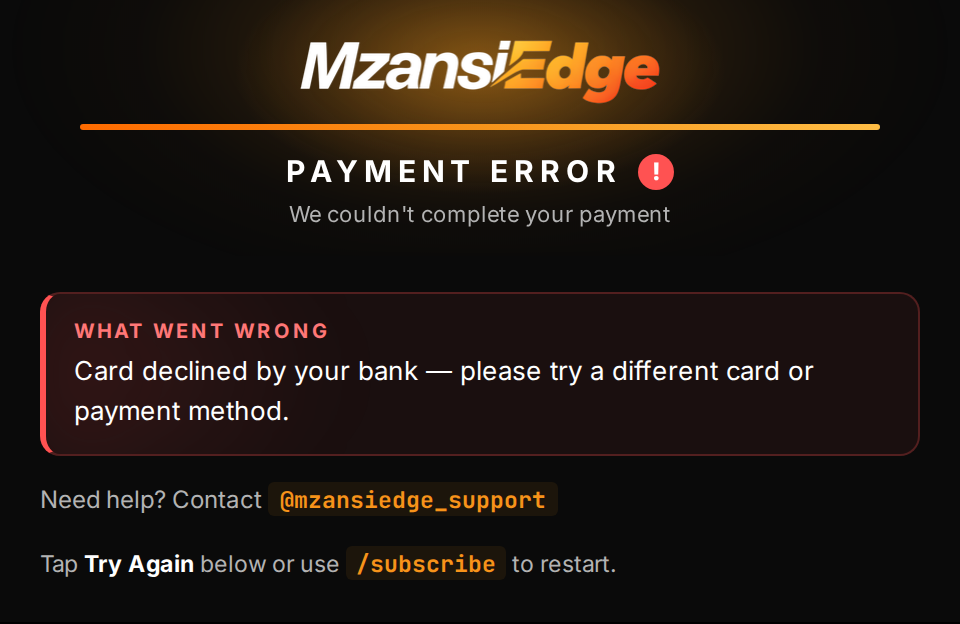
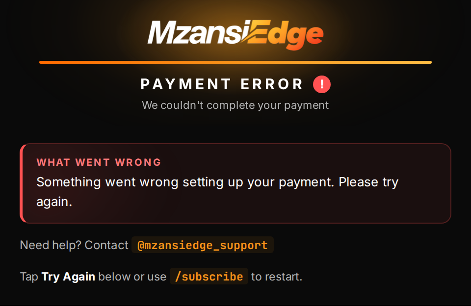
Active-subscription summary card. Sent on /billing and /status — shows the user
their current plan, member-since date, next renewal, and plan code. Tier-locked surface (only Gold
or Diamond can be active), so this surface gets a tier-color logo glow matching
sub_payment_confirmed — same dual-layer centred recipe. Tier-block uses tier-color
left-border + soft tier wash + green-circle tick beside "Active". Founding members see an extra
banner with their slot number (#42) — orange internal-glow pattern reused from sub_plans.
No footer.
Design notes
- Glow type: tier-color (this is a tier-locked surface — only Gold or Diamond ever lands here). Single template, two tier classes (
.tier-gold/.tier-diamond) drive the CSS variables. Same recipe assub_payment_confirmedfor visual consistency across the success/active state pair. - Header changes from prod: removed
linear-gradient(180deg, #0D0D0D, #141414)background andborder-bottom: 1px solid #2A2A2A. Title is tier-coloured (was white) — strengthens the tier identity. Subline added: "Your subscription details". - Tier block: tier-color left-border + soft tier wash (mirrors
sub_payment_confirmedplan block). Replaces prod's flatborder-bottomdivider — that divider felt like a footer. - Active status with green-tick glyph: 14px green circle + "Active" label. Replaces the prod ✅ emoji. Consistent with
sub_payment_confirmed's success-affirmation pattern — same green#5DD68F, same glyph treatment, smaller size for inline status context. - Meta rows polished: dates rendered in JetBrains Mono white-bold (was sans). Plan code as orange code-pill (matches
/subscribe+ support-handle pills on other Batch 3 surfaces). Background#111111+ 1px border#1E1E1Efor crisp edges. - Founding banner — internal glow + slot badge: same orange-glow architecture as
sub_plans+sub_payment_readyfounding banners. Slot number (#NN) in orange JetBrains Mono on the right. Banner only renders whenfounding_slotis set. - No footer per universal §7. Card terminates with the founding banner (or last meta row if not founding).
Implementer agent — targets
- Replace
bot/card_templates/sub_billing_active.htmlwith the canonical (lift from/tmp/sub_billing_active_canonical.html). Remove gradient header background + border-bottom; insert.logo-glow+.logo-glow-screen; switch to single.card.tier-{tier}+ CSS vars (drop.tier-gold .tier-name/.tier-diamond .tier-nameoverrides); replace.tier-headerbottom-border with new.tier-blockleft-border + glow; replace✅emoji with inline green-circle tick; restyle.meta-rowwith#111111bg + JetBrains Mono values; update founding section to internal-glow + slot-badge layout. bot/card_data_adapters.py:build_sub_billing_active_dataalready emits the right shape (tier,tier_emoji,tier_name,plan_code,member_since,next_renewal,is_founding,founding_slot). No data-side changes needed.- Acceptance:
latest/sub_billing_active.pngmatchescanonical/sub_billing_active_canonical_gold.png/_diamond.pngby tier (with founding variant rendering whenfounding_slotis set). Tier-color logo glow visible. Tier block has tier-color left-border + soft wash. Inline green-circle tick replaces ✅ emoji. Meta values in JetBrains Mono. Plan code as orange code-pill. No footer.
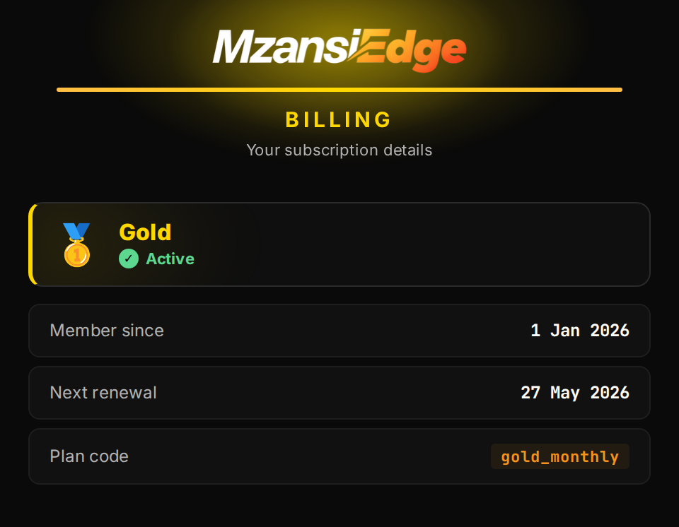
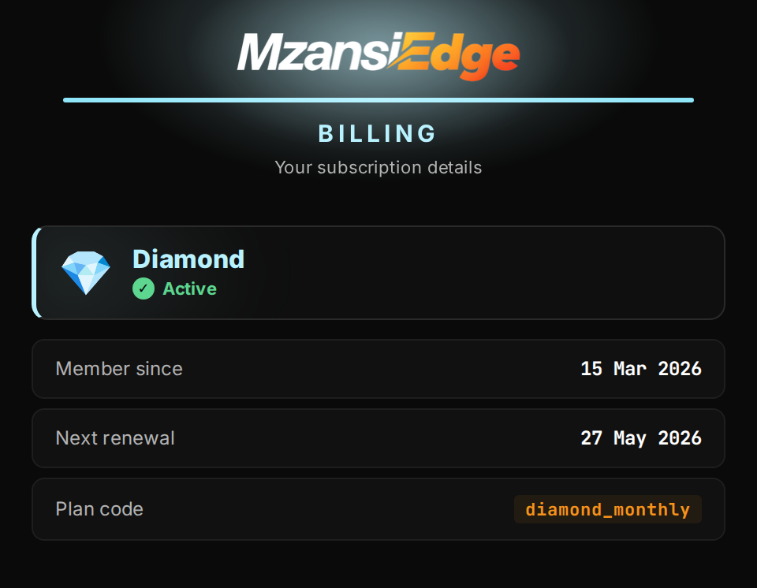
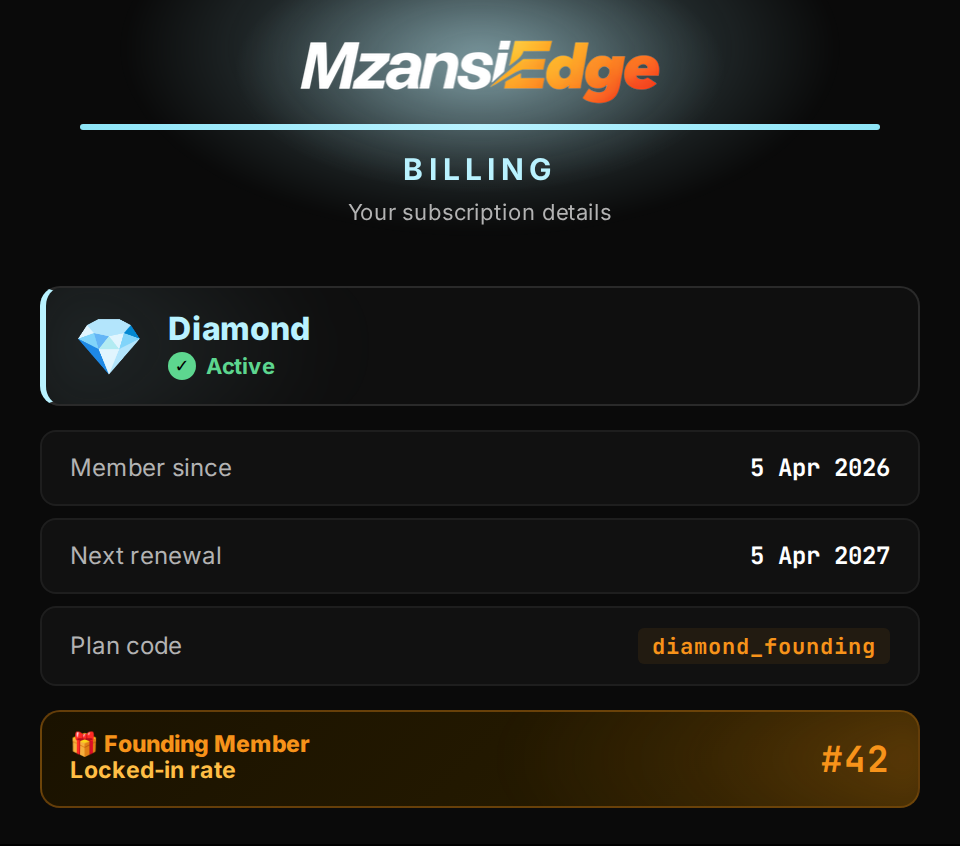
Subscription status card. Sent on /status for paid users — shows current tier, member-since,
next renewal, plan code, plus a renewal-warning row when renewal is ≤14 days away. Tier-locked surface
(only Gold or Diamond can be active), uses the same tier-color logo glow as sub_payment_confirmed
and sub_billing_active for visual consistency across the active-state set. Pulsing green dot
on the ACTIVE label reads as a "live" status indicator. Renewal warning row uses the same orange-glow
architecture as the founding banner — same accent, different semantic. No footer.
Design notes
- Glow type: tier-color (tier-locked surface). Single template, two tier classes (
.tier-gold/.tier-diamond) drive CSS variables. Same recipe assub_payment_confirmed+sub_billing_active. - Header changes from prod: removed
linear-gradient(180deg)background andborder-bottom. Title is tier-coloured with inline 18px green-circle tick (was bare white "STATUS ✅"). Subline added: "Subscription active". - Status indicator — pulse dot: 7px green dot with soft glow halo on the ACTIVE label. Replaces flat green text. Reads as a "live" status pulse (subtle, not animated since this is a static PNG render).
- Tier block: tier-color left-border + soft tier wash. Same architecture as the active-state set.
- Meta rows polished: dates in JetBrains Mono white-bold; plan code as orange code-pill (matches Batch 3 surfaces).
- Renewal warning row (≤14 days): orange-accent left-border + soft orange glow + bold day count. Same architecture as the founding banner — different semantic (urgent reminder, not premium accent).
- Founding section (when set): identical recipe to
sub_billing_active. Internal orange glow + slot badge. - Bronze styling removed: prod CSS had
.tier-bronzerules but Bronze is the free tier — never lands on the active-status surface (sub_status_bronze.htmlis its own template). Dead code dropped. - No footer per universal §7. Card terminates with whichever conditional row is last (renewal warning, founding, or last meta row).
Implementer agent — targets
- Replace
bot/card_templates/sub_status_active.htmlwith the canonical (lift from/tmp/sub_status_active_canonical.html). Remove gradient header background + border-bottom; insert.logo-glow+.logo-glow-screen; switch to single.card.tier-{tier}+ CSS vars; replace.tier-badgebordered-box with new.tier-block(left-border + glow); replace bare green "ACTIVE" text with pulse-dot + label; replace.days-leftflat box with the orange-glow renewal-warning row; restyle.meta-rowto JetBrains Mono values + orange code-pill plan; drop.tier-bronzerules (dead code). bot/card_data_adapters.py:build_sub_status_active_dataalready emits the right shape (tier,tier_emoji,tier_name,plan_code,expires_label,days_left,member_since,founding_slot). No data-side changes needed.- Acceptance:
latest/sub_status_active.pngmatchescanonical/sub_status_active_canonical_gold.png/_diamond.pngby tier (renewal warning visible only whendays_left ≤ 14). Tier-color logo glow visible. Pulse dot beside ACTIVE. Renewal warning row uses orange-glow architecture. No footer.
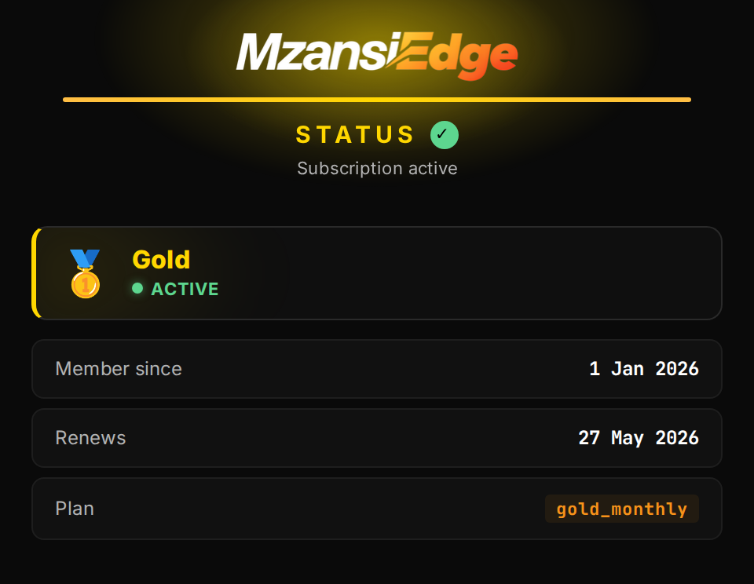
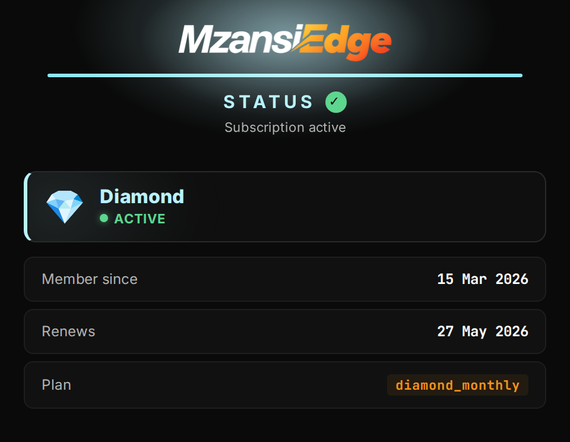
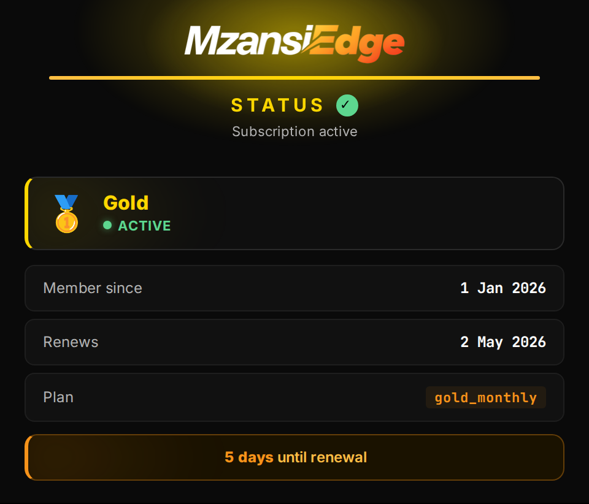
Free-plan status card. Sent on /status for Bronze (free) users. The conversion-funnel
counterpart to sub_status_active — same "STATUS" title and shape, different goal:
this card sells the upgrade. Brand-orange logo glow (non-tier surface — Bronze reads as the floor
that everyone shares, not a tier identity). Bronze tier block uses bronze-color left-border accent.
Daily-views progress bar transitions from brand-orange to red gradient when the cap is hit.
Side-by-side Gold/Diamond CTA pills with tier-color left borders. Optional founding banner with
orange internal-glow accent. No footer.
Design notes
- Glow type: brand-orange (non-tier surface). Bronze isn't a paid tier — it's the floor every user starts on. The bronze accent on the tier-block carries the bronze identity locally without claiming a tier-color glow.
- Header changes from prod: removed
linear-gradient(180deg)background andborder-bottom. Subline added: "Free plan — see every edge, unlock with upgrade". - Bronze tier block: bronze left-border
#CD7F32+ soft bronze wash. Replaces the prod pill-shaped.badge(which was outside the canonical tier-block pattern). Now matches the tier-block pattern used onsub_billing_active/sub_status_active. - Limit section as a contained block: progress bar wrapped in a bordered card with
#111111bg +#1E1E1Eborder. Consistent with meta-row styling on the active-state set. - Progress bar — graceful → urgent: brand-orange→amber gradient at < 100%. Switches to red→orange gradient at 100% via
.progress-fullclass. "Daily limit reached" copy in red-tinted strong text. - CTA pills with tier-color left borders: 3px Gold left-border / 3px Diamond left-border + matching soft tier wash. Prod had subtle full borders — left-border accent is more decisive and matches the active-state plan-block pattern.
- Removed cta-section border-top divider: prod had
border-top: 1px solid #1E1E1Eon the cta-section (read as a footer). Now spaces with margin only. - Founding banner: same internal orange-glow recipe as
sub_plans/sub_billing_active. Days-left and slot count baked into the title/body. - No footer per universal §7. Card terminates with the founding banner (or CTA pills if no founding offer is active).
Implementer agent — targets
- Replace
bot/card_templates/sub_status_bronze.htmlwith the canonical (lift from/tmp/sub_status_bronze_canonical.html). Remove gradient header background + border-bottom; insert.logo-glow+.logo-glow-screen; add subline; replace pill-shaped.badgewith the new.tier-block(bronze left-border + glow); wrap limit-section in a contained card; replace flat full-border CTA pills with left-border accent variants; dropborder-topon.cta-section; rebuild founding banner with internal-glow recipe. bot/card_data_adapters.py:build_sub_status_bronze_dataalready emits the right shape (daily_views_used,daily_cap,daily_pct,founding_offer). No data-side changes needed.- Acceptance:
latest/sub_status_bronze.pngmatchescanonical/sub_status_bronze_canonical_partial.pngat <100%, switches to_limit_reached.pngvisual whendaily_pct == 100, and shows the founding banner from_with_founding.pngwhenfounding_offeris set. Brand-orange centred logo glow visible. Bronze tier block has bronze left-border. Progress bar gradient swaps red on cap. CTA pills have tier-color left borders. No footer.
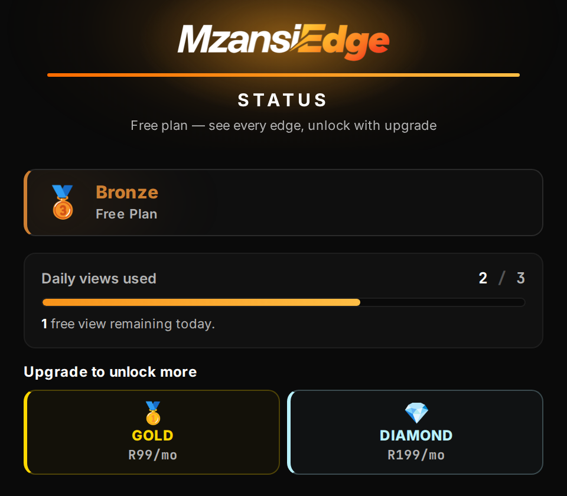
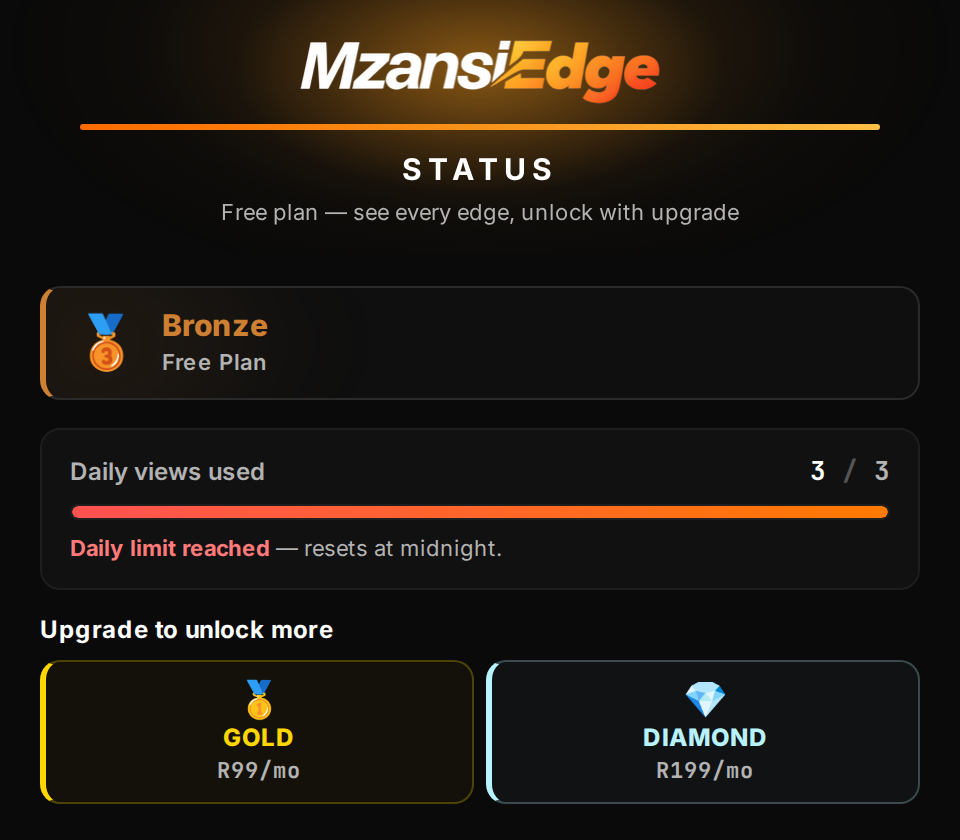
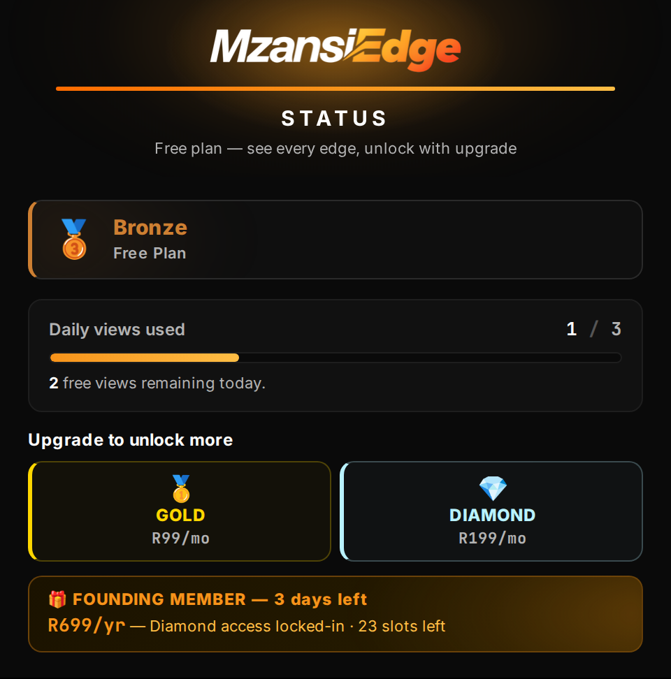
No-subscription billing state. Sent on /billing for users without an active paid plan —
either lapsed (last_plan + ended_at populated) or never-subscribed (both empty). Brand-orange logo
glow (non-tier surface), neutral-grey left-border on the status block. Keeps the card calm — this is
a state surface, not a sales pitch (sub_status_bronze handles the upsell). Replaces prod's
⭕ emoji with a clean 22px hollow-circle SVG-style indicator. Variants differ by whether the
last-plan/ended-at info rows render. No footer.
Design notes
- Glow type: brand-orange (non-tier surface — applies to anyone). Status block uses neutral grey
#555555left-border so it doesn't shout colour at a non-event surface. - Header changes from prod: removed
linear-gradient(180deg)background andborder-bottom. Subline added: "No active subscription". - Status block — clean hollow circle: 22px ring with 2px
#777777border. Replaces the prod ⭕ emoji at 28px (which renders inconsistently across platforms — sometimes filled red, sometimes outlined). Single bordered circle is platform-stable. - Status detail line: dynamic copy based on data — "Subscription ended" when
last_planorended_atis set, "Free plan only" when neither (never-subscribed user). - Info rows: same JetBrains Mono + #111111 + #1E1E1E recipe as the active-state set. Conditional — only render when data is present.
- Trailing instruction:
/subscribeas orange code-pill (matches Batch 3 surfaces). No border-top divider (prod had one — read as a footer). - No footer per universal §7. Card terminates with the trailing instruction.
Implementer agent — targets
- Replace
bot/card_templates/sub_billing_inactive.htmlwith the canonical (lift from/tmp/sub_billing_inactive_canonical.html). Remove gradient header background + border-bottom; insert.logo-glow+.logo-glow-screen; add subline; replace.status-rowbottom-border layout with new.status-block(grey left-border + hollow-circle indicator); restyle.info-rowwith JetBrains Mono values; replace flat.cta-hintwith code-pill/subscribeinstruction; dropborder-top. bot/card_data_adapters.py:build_sub_billing_inactive_dataalready emits the right shape (last_plan,ended_at). No data-side changes needed.- Acceptance:
latest/sub_billing_inactive.pngmatchescanonical/sub_billing_inactive_canonical_lapsed.pngwhen last_plan/ended_at set,_never_subscribed.pngwhen both empty. Brand-orange centred logo glow visible. Hollow-circle status indicator (no ⭕ emoji). No footer. Trailing blank ≤14px.
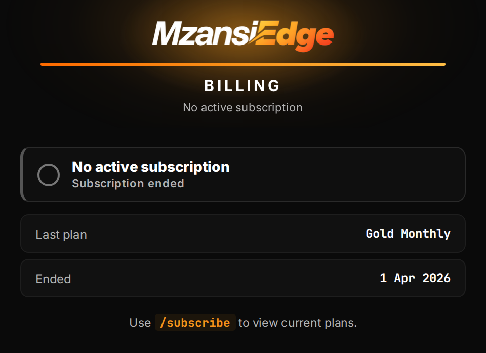
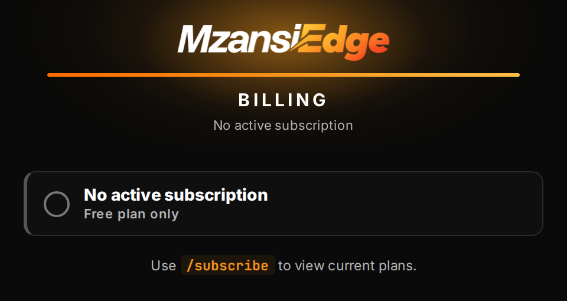
Diamond-trial expiry card. Sent when a user's 7-day Diamond trial ends — they're now on Bronze. This is the highest-conversion-pressure surface in the subscription state set: the user has just experienced full Diamond access for a week and lost it. Diamond-color logo glow (cyan) carries the "what you had" memory. Hero block uses the same cyan accent. "What you've lost" list uses red ✕ markers — direct, honest. Stats row shows days explored + edge accuracy if positive (green). Side-by-side Gold/Diamond upgrade pills with tier-color left borders. Removed the "Bet responsibly" footer (responsible-gambling copy is for monthly reports + re-engagement nudges, not in-flow upgrade screens). No footer.
Design notes
- Glow type: diamond cyan
#B9F2FF(canonical) — keeps the visual memory of the trial tier the user just lost. Single-tier surface: this card only ever fires after a Diamond trial ends. - Header changes from prod: removed
linear-gradientbackground andborder-bottom. Title is cyan (was white). Subline added: "You're back on Bronze — keep your edge". - Hero block: cyan left-border + soft cyan wash. Replaces prod's bare centred icon-above-text — now framed and consistent with the active-state set's hero pattern.
- "What you've lost" with red ✕ markers: prod had bullets in the hero
.trial-subas soft text. Promoted to a contained block with red ✕ markers — direct loss-aversion framing without crossing into hostile. - Stats grid polished: edge accuracy in green (
#5DD68F) when positive — "you saw real performance during the trial" reinforcement. JetBrains Mono values, contained card styling. - Upgrade pills with tier-color left borders: Gold + Diamond, same recipe as
sub_status_bronze. 3px tier-color left border + matching soft tier wash. - Removed "Bet responsibly. 18+ only." footer: per CLAUDE.md notification content laws (rule 5), responsible-gambling footer applies to monthly reports, trial messages, and re-engagement nudges — but the trial-expiry card itself is the conversion CTA, not a passive teaser. Footer suppressed to keep the call-to-action clean. (RG copy still fires through the parallel notification text.)
- No footer per universal §7.
Implementer agent — targets
- Replace
bot/card_templates/sub_trial_expiry.htmlwith the canonical (lift from/tmp/sub_trial_expiry_canonical.html). Remove gradient header background + border-bottom; insert cyan.logo-glow+.logo-glow-screen; add subline; replace the trial-header block with the new.hero-blockpattern (cyan left-border + glow); add the.lost-blockwith red ✕ markers; restyle.stats-gridwith JetBrains Mono + green hit-rate; replace flat.up-pillwith tier-color-left-border variants; remove.rg-footer. bot/card_data_adapters.py:build_sub_trial_expiry_dataalready emits the right shape (days_used,hit_rate_pct). No data-side changes needed.- Acceptance:
latest/sub_trial_expiry.pngmatchescanonical/sub_trial_expiry_canonical_with_hit_rate.pngwhenhit_rate > 0, else_no_hit_rate.png. Cyan logo glow visible. Hero block has cyan left-border. "What you've lost" list with red ✕ markers. Edge-accuracy stat in green when positive. No "Bet responsibly" footer. No card footer.
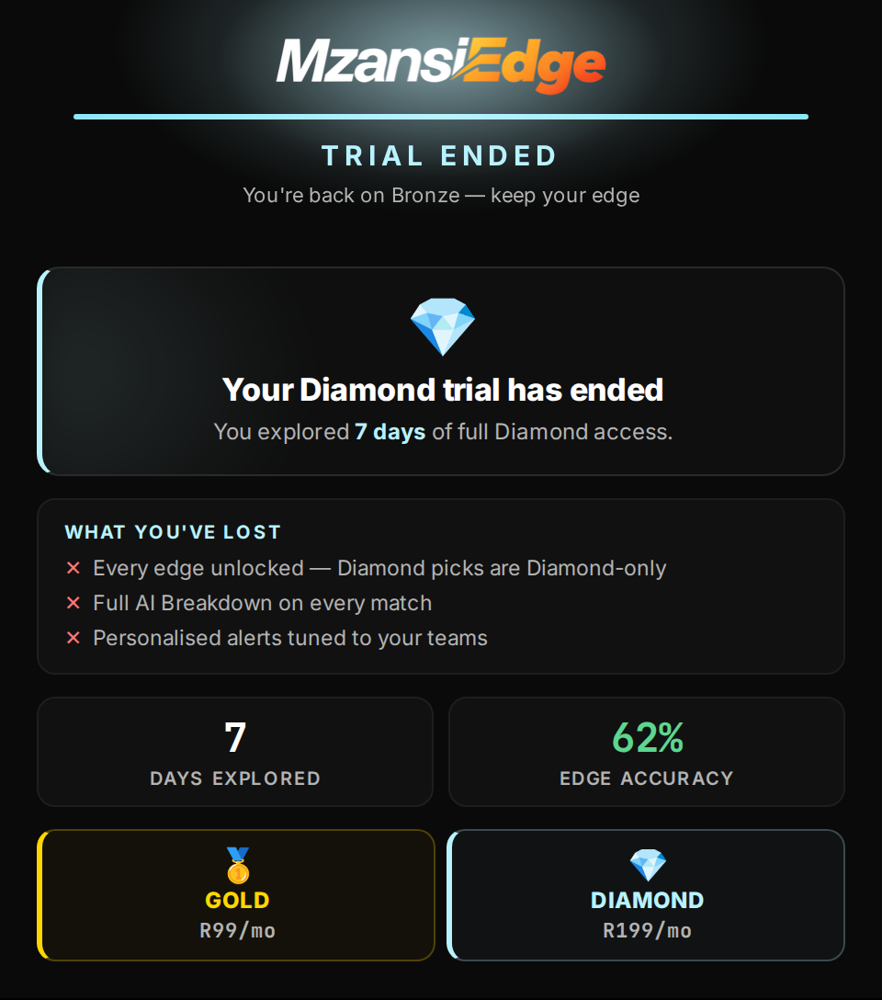
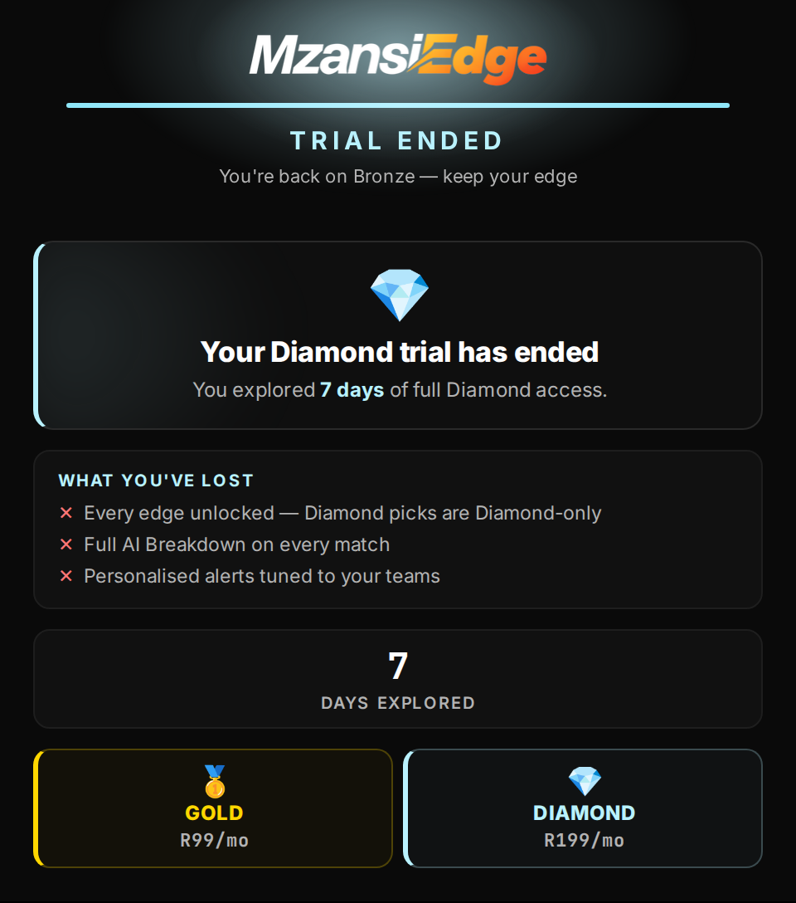
Subscription-expired notice. Sent when a paid subscription ends and the user reverts to Bronze. Distinct
from sub_trial_expiry: trial-expiry follows a 7-day intro, this fires on actual paid-tier
lapse (renewal failure, cancellation, period-end). Closes Batch 4 (Subscription state). The header glow
uses the old tier color — yellow if they were Gold, cyan if Diamond — preserving the
"what you had" identity. Tier-flow row visualises old → bronze transition. Renew CTA with internal orange
glow. No prod ⏰ alarm-clock emoji. No footer.
Design notes
- Glow type: old-tier-color (whichever tier the user just lost). Single template, two old-tier classes (
.tier-old-gold/.tier-old-diamond) drive the CSS variables. - Header changes from prod: removed
linear-gradientbackground andborder-bottom. Subline added: "Your access has reverted to Bronze". - Removed ⏰ alarm-clock emoji: prod had a 36px ⏰ centred above the message — alarm-clock semantics felt punitive. The tier-flow row already communicates expiry visually (old → bronze).
- Tier-flow row — chips with left borders: old-tier chip has 3px left-border in old-tier color + soft tier wash. New-tier chip is bronze (3px
#CD7F32+ bronze wash). Cleaner than the prod border-only tier-chips — matches the canonical chip pattern used in tier_lock_upsell. - Renew CTA with internal orange glow: same orange-glow architecture as the founding banner across the subscription set.
/subscribeas a strong orange code-pill — clear single action. - Card terminates immediately after the renew CTA: prod left bottom-padding only. Canonical card matches the pattern with 18px body bottom-padding.
- No footer per universal §7.
Implementer agent — targets
- Replace
bot/card_templates/sub_expiry_notice.htmlwith the canonical (lift from/tmp/sub_expiry_notice_canonical.html). Remove gradient header background + border-bottom; switch to.card.tier-old-{tier}+ CSS vars; insert.logo-glow+.logo-glow-screen; add subline; remove the standalone ⏰ icon; replace flat.tier-chiprules with left-border variants; replace bordered.renew-hintwith internal-glow.renew-cta. bot/card_data_adapters.py:build_sub_expiry_notice_dataalready emits the right shape (old_tier,old_tier_emoji,old_tier_name,new_tier). No data-side changes needed.- Acceptance:
latest/sub_expiry_notice.pngmatchescanonical/sub_expiry_notice_canonical_from_gold.pngfor Gold expiry,_from_diamond.pngfor Diamond. Old-tier-color logo glow visible. No ⏰ emoji. Tier-flow chips with left borders. Renew CTA with internal orange glow. No footer.
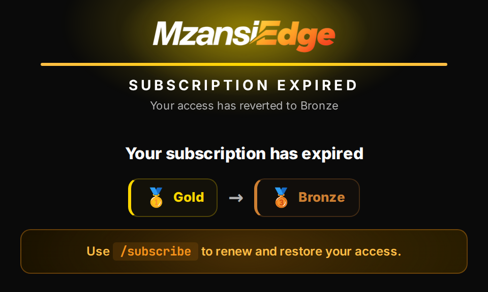
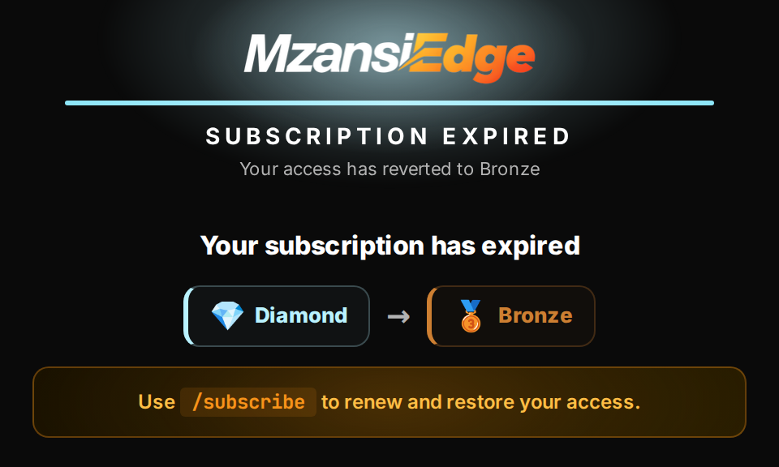
Upgrade-from-Bronze card. Opens Batch 5 — Subscription upgrade. Sent when a Bronze user taps an upgrade CTA (from anywhere — daily-limit hit, locked-tier tap, /subscribe). Dual-target surface: shows both Gold and Diamond plans side-by-side with differentiator + features. Brand-orange logo glow (multi-tier surface — both upgrade paths reachable). Plan tiles use tier-color left borders + matching soft tier wash. Optional founding banner with internal orange glow. No footer.
Design notes
- Glow type: brand-orange (multi-tier surface — Bronze user funnels to either Gold or Diamond). Per-element tier signalling on plan tiles handles the per-tier identity.
- Header changes from prod: removed
linear-gradientbackground andborder-bottom. Subline added: "Unlock the full edge system". - Current-tier chip: bronze left-border chip inline with "You are on … — the free plan." Replaces prod's bordered
.current-tierbottom-divider treatment. Matches the canonical chip pattern. - Plan tiles with tier-color left borders + glow: 3px Gold left-border + cyan radial-gradient glow on Gold tile (yellow); 3px Diamond left-border + cyan glow on Diamond. Replaces prod's tinted full borders — left-border accent is more decisive and scales better at small font sizes.
- Plan-features list: only renders when
plan.featuresis set (Diamond gets it; Gold gets only the differentiator). Matches the data shape frombuild_sub_upgrade_bronze_data. - Founding banner: same internal orange-glow recipe as
sub_plans/sub_billing_active/sub_status_bronze. Conditional onfounding_offer. - Plan-feature bullet color: cyan (matches Diamond brand) — the features bullet only appears under Diamond, so cyan is the contextually correct accent.
- No footer per universal §7. Card terminates with founding banner (or last plan tile if not founding).
Implementer agent — targets
- Replace
bot/card_templates/sub_upgrade_bronze.htmlwith the canonical (lift from/tmp/sub_upgrade_bronze_canonical.html). Remove gradient header background + border-bottom; insert.logo-glow+.logo-glow-screen; add subline; replace bordered current-tier with inline chip pattern; replace flat.planbackgrounds with tier-color-left-border + radial-glow recipe; restyle features list with cyan bullets; rebuild founding banner with internal-glow recipe. bot/card_data_adapters.py:build_sub_upgrade_bronze_dataalready emits the right shape (current_tier,target_plans[],founding_offer). No data-side changes needed.- Acceptance:
latest/sub_upgrade_bronze.pngmatchescanonical/sub_upgrade_bronze_canonical_standard.pngwhen no founding offer,_with_founding.pngwhen set. Brand-orange centred logo glow visible. Plan tiles have tier-color left borders + glow. Bronze chip inline in the "You are on …" row. No footer.
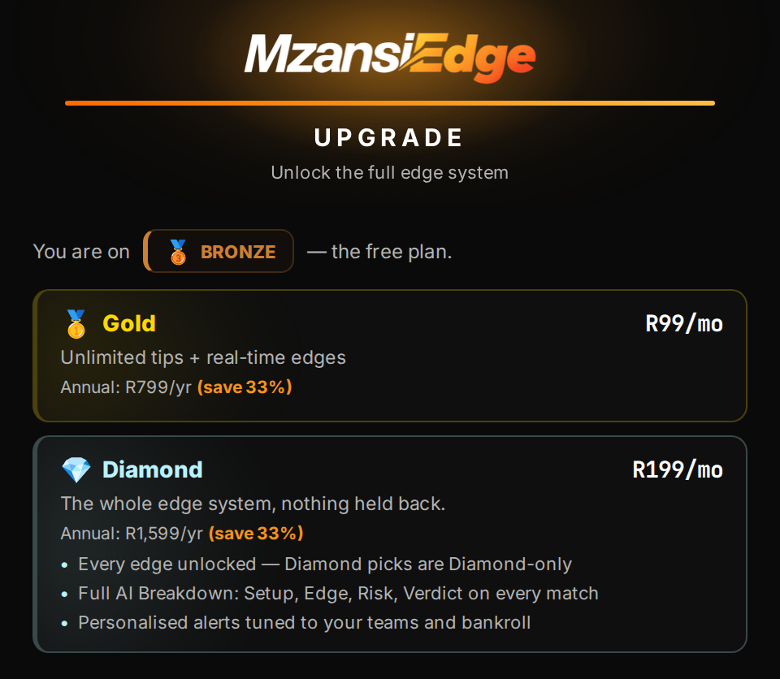
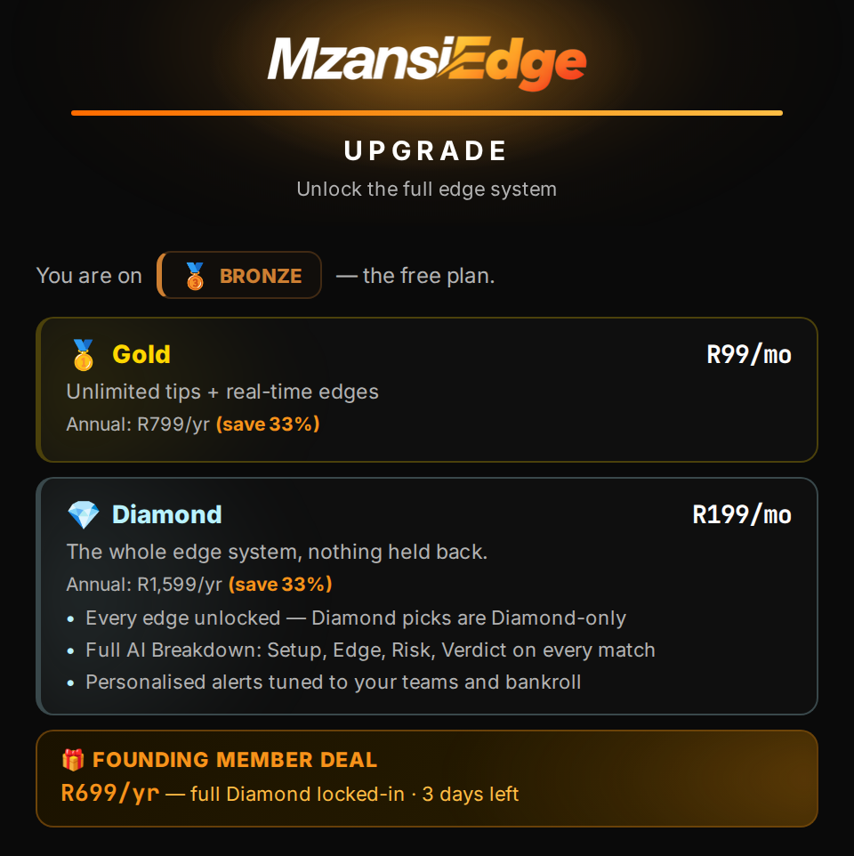
Gold→Diamond upgrade card. Sent when a Gold user taps a Diamond-locked edge or a top-tier upgrade CTA. Single-target surface — every signal points at Diamond. Diamond-color logo glow (cyan) establishes the tier the user is being asked to step up to. Current-tier chip (Gold) sits inline above the pitch. Lock note ("Diamond edges remain locked") in cyan with internal glow. Feature rows use cyan left-border accent + cyan ▸ bullet for a uniform "everything points at Diamond" read. Price block matches the canonical price-block recipe (cyan left-border + glow). Optional founding banner with internal orange glow. No prod-emoji-icons-per-feature row — those felt arbitrary. No footer.
Design notes
- Glow type: diamond-target cyan
#B9F2FF(canonical). The header glow is cyan because the user IS Gold — this card sells them the next step. CSS variable--target-colordrives all cyan-toned elements. - Header changes from prod: removed
linear-gradientbackground andborder-bottom. Title is canonical 14px tracked cyan with inline 💎. Subline added: "One step from our best plan". - Current chip inline: gold chip (3px gold left-border) sits on the same line as "You are on …". Replaces prod's bordered
.current-tierwith bottom-divider — that read as a footer. - Lock note as a contained block: cyan left-border + soft cyan wash + internal glow. Replaces the prod's flat
.lock-notetinted box. The 🔒 icon is canonical (already used on tier_lock_upsell). - Feature rows uniform: every feature row gets cyan left-border + cyan ▸ bullet. Prod cycled through 4 emojis (📈 💰 📊 🎯) which felt arbitrary and distracted from the message. Uniform cyan accents read more decisively.
- Price block: cyan left-border + soft cyan wash + glow. 24px JetBrains Mono price with letter-spacing tightened. Matches the canonical price-block recipe used elsewhere in Batch 3.
- Founding banner: same internal orange-glow recipe. Conditional on
founding_offer. - No footer per universal §7.
Implementer agent — targets
- Replace
bot/card_templates/sub_upgrade_gold.htmlwith the canonical (lift from/tmp/sub_upgrade_gold_canonical.html). Remove gradient header background + border-bottom; insert cyan.logo-glow+.logo-glow-screen; add subline; replace bordered current-tier with inline gold chip; replace flat lock-note with cyan-glow variant; remove the per-feature emoji-icon cycle and replace with uniform cyan ▸ bullets; restyle price-block to canonical (cyan left-border + glow); rebuild founding banner. bot/card_data_adapters.py:build_sub_upgrade_gold_dataalready emits the right shape (current_tier,diamond_pitch,lock_note,features[],founding_offer). No data-side changes needed.- Acceptance:
latest/sub_upgrade_gold.pngmatchescanonical/sub_upgrade_gold_canonical_standard.pngwhen no founding offer,_with_founding.pngwhen set. Cyan logo glow visible. Gold chip inline. Cyan-bordered feature rows with ▸ bullets. No per-row emoji icons. No footer.
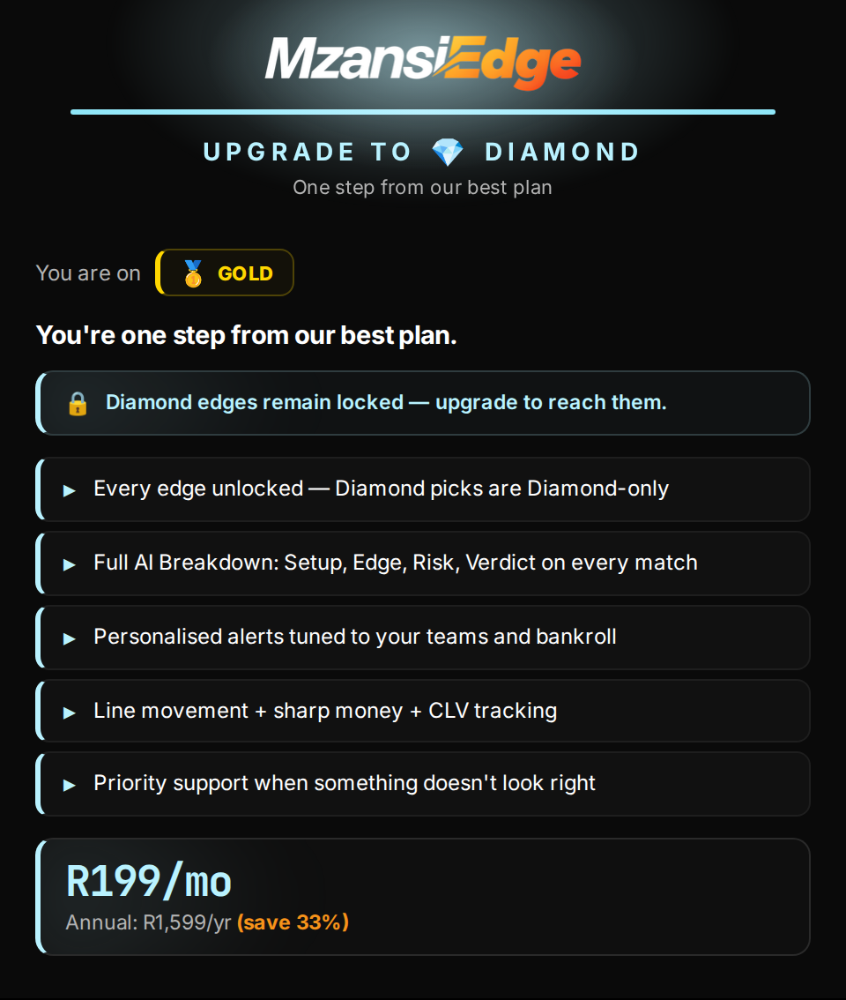
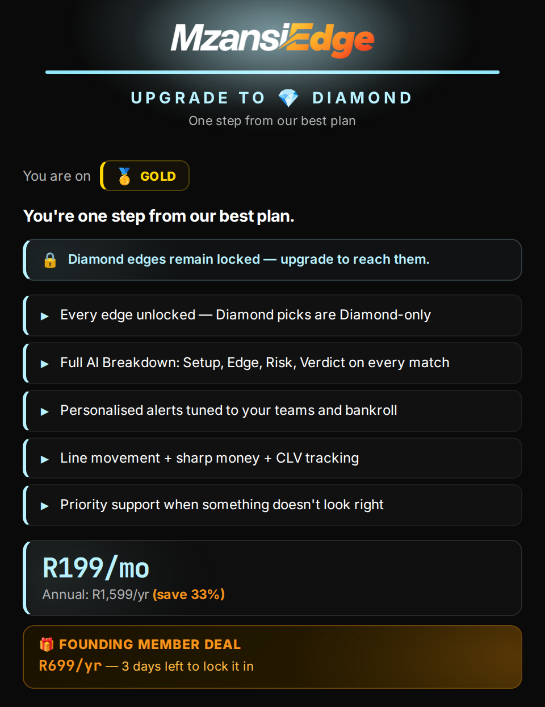
"You're already on Diamond" max-tier card. Sent when a Diamond user taps any upgrade-flow CTA. Closes Batch 5 — Subscription upgrade. No upsell — this card affirms the user has the top tier and shows their stats if available. Diamond logo glow (cyan), hero block with cyan left-border + cyan wash + 38px diamond emoji + bold "You have our best plan" headline. Three benefits with cyan tick-circles. Optional 3-stat strip (hit rate · edges · ROI) with tier-color left borders. No footer.
Design notes
- Glow type: tier-color cyan (canonical). Solo-tier surface — only Diamond users land here.
- Header changes from prod: removed
linear-gradientbackground andborder-bottom. Title canonical 15px tracked cyan with inline 💎. Subline added: "Max tier — every edge unlocked". - Hero block — contained, not bare: cyan left-border + soft cyan wash + 38px 💎 + 18px bold "You have our best plan" + 12px sub. Replaces prod's bare centred icon-above-text — now framed and consistent with the active-state set's hero pattern.
- Hero copy tightened: prod paragraph was 3 sentences smashed into
.sub-text. Split into 1-line hero-sub ("Nothing is held back — you see every edge we publish") + 3 separate benefit rows below. - Benefit rows with cyan tick circles: 16px cyan-circle ✓ glyphs + cyan left-border. Replaces the verbose paragraph layout. Glanceable.
- Stats strip canonical: 3-stat row matches the active-state stat pattern (cyan left-border + JetBrains Mono value). Conditional on
stats_summary. - Stat label change: "Edges Analysed" → "Edges" (uppercase 9.5px label in 100px-wide tile gets crowded with the longer label). "Avg ROI" kept as-is.
- No footer per universal §7.
Implementer agent — targets
- Replace
bot/card_templates/sub_upgrade_diamond_max.htmlwith the canonical (lift from/tmp/sub_upgrade_diamond_max_canonical.html). Remove gradient header background + border-bottom; insert cyan.logo-glow+.logo-glow-screen; add subline; replace centred-bare hero with the contained.hero-block(cyan left-border + glow); split the 3-line.sub-textinto separate.benefitrows with cyan tick circles; restyle stats grid with canonical pattern; shorten "Edges Analysed" label to "Edges". bot/card_data_adapters.py:build_sub_upgrade_diamond_max_dataalready emits the right shape (stats_summary). No data-side changes needed.- Acceptance:
latest/sub_upgrade_diamond_max.pngmatchescanonical/sub_upgrade_diamond_max_canonical_no_stats.pngwithout stats,_with_stats.pngwith all 3 stats. Cyan logo glow visible. Hero block with cyan left-border. 3 benefit rows with cyan tick circles. No footer.
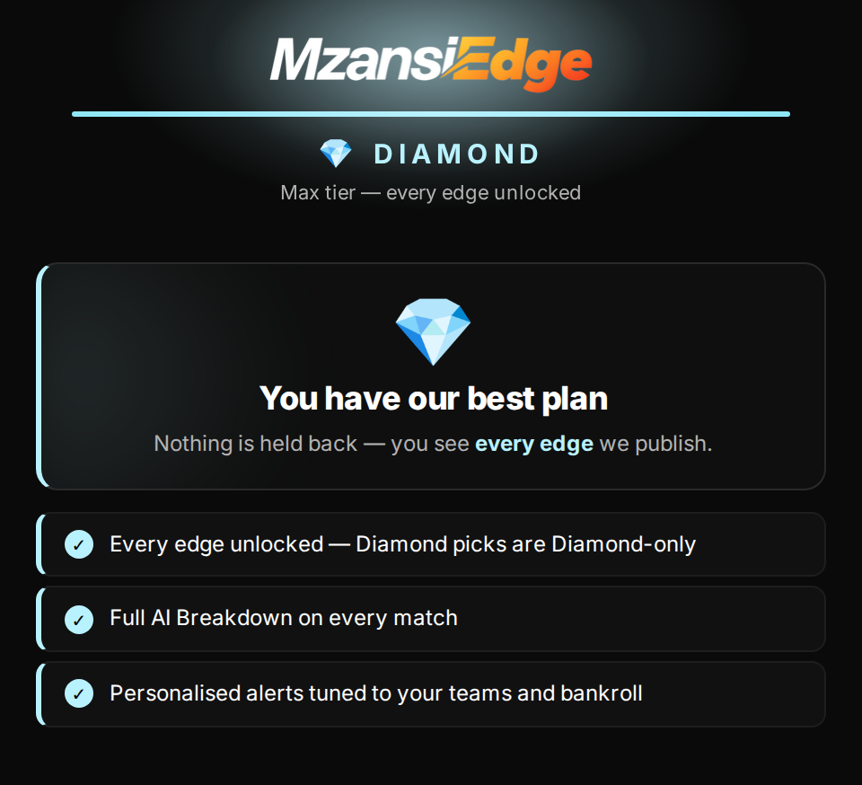
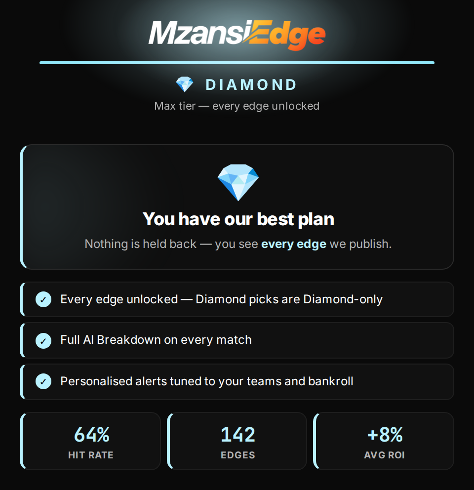
Founding-member offer card. Opens Batch 6 — Subscription founding. The hero conversion surface for founding-member sales: hero price (R699/yr in JetBrains Mono yellow), strikethrough on normal price, "Save 71%" pill, monthly equivalent. Two big counters (days left · slots left) with orange-glow highlighting urgency. Five benefit rows. Brand-orange logo glow at full strength (this is THE founding-member surface — the orange runs hot here). No footer.
Design notes
- Glow type: brand-orange (founding-strong variant — wider radial spread + higher alpha than the standard orange glow). This is the only surface in the system where the orange runs at full intensity, signalling premium-offer urgency.
- Header changes from prod: removed
linear-gradient(180deg, #150E00, #1A1200)background andborder-bottom: 1px solid #F7931A60. The full-card gold-tinted backgroundlinear-gradient(180deg, #0D0A00, #0A0A0A)is also dropped — too heavy. Keeps the canonical near-black#0A0A0A+ orange glow. - Logo size 30px: slightly smaller than canonical 32px — DETAIL variant 480×620 has tight vertical budget; saves 2px to fit all benefit rows without scroll.
- Price hero block: dual-side orange left+right borders (3px each) + soft internal orange glow. Frames the price as the focal point. Replaces prod's flat
.price-herocentring. - Price 46px gold + 18px year: prod was 48px + 16px year — slightly tightened for letterspacing balance. Letter-spacing -1px for the 46px display number to prevent the wide R699 from looking gappy.
- Save pill: gold-tinted with stronger 800-weight font. Replaces prod's 700-weight pill.
- Counters with internal orange glow: each counter has its own orange left-border + soft orange wash from the left edge. Prod had flat amber-tinted background — canonical adds depth.
- Benefit rows with orange-circle tick glyphs: 14px orange-circle ✓ glyphs + orange left-border. Replaces prod's flat amber bullet (
::before✓). Matches the canonical tick-circle pattern used onsub_payment_confirmedandsub_billing_active. - Card terminates within 620px: tight padding/gaps tuned to fit price hero + counters + 5 benefits within the fixed canvas.
- No footer per universal §7. Card terminates with the last benefit row.
Implementer agent — targets
- Replace
bot/card_templates/sub_founding_live.htmlwith the canonical (lift from/tmp/sub_founding_live_canonical.html). Drop the full-card gold-tinted gradient background; remove header gradient + border-bottom; insert orange.logo-glow+.logo-glow-screenat founding-strong intensity; rebuild.price-herowith dual-side orange borders + internal glow; restyle counters with orange-glow recipe; replace flat::before✓ bullets with 14px orange-circle tick glyphs; tune body padding/gaps to fit 620px. bot/card_data_adapters.py:build_sub_founding_live_dataalready emits the right shape (days_left,slots_remaining,annual_price,monthly_equiv,normal_monthly,savings_pct). No data-side changes needed.- Acceptance:
latest/sub_founding_live.pngmatchescanonical/sub_founding_live_canonical_active.png. Brand-orange logo glow at founding-strong intensity. Price hero with dual orange borders + internal glow. Counters with orange-glow recipe. Benefit rows with orange-circle tick glyphs. No footer. Fits within 480×620.
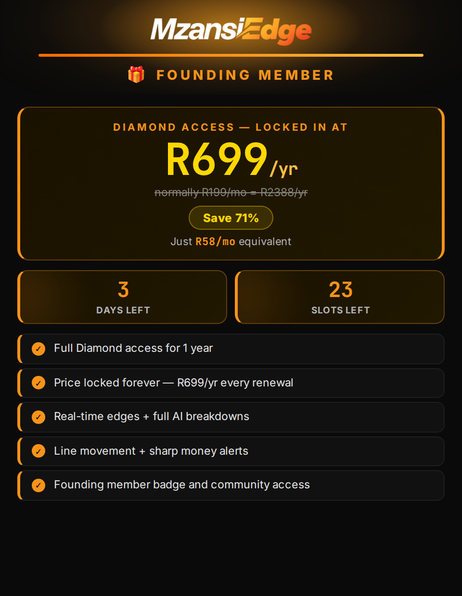
Founding-member purchase confirmation. Sent immediately after Stitch confirms a founding-member payment. Hero element is the user's slot number (#NN in 56px gold mono) — a unique founding-member identity moment. Inline green-circle tick beside the title (matches sub_payment_confirmed pattern). 5 benefit rows with orange-circle tick glyphs. Joined date in orange JetBrains Mono. No footer.
Design notes
- Glow type: brand-orange founding-strong intensity (matches
sub_founding_live) — keeps the founding-member visual identity continuous from offer → confirmation. - Slot hero — number is the trophy: 56px gold JetBrains Mono with -2px letter-spacing, inline 26px orange "#" prefix. Replaces prod's bordered slot card with dual-side orange borders + internal glow + blacker hero background. Slot number is the value.
- Title with inline green-circle tick: matches the success-affirmation pattern across
sub_payment_confirmed+sub_billing_active+sub_status_active. Subline reads "You're locked in — welcome to the founders". - Benefits with orange-circle tick glyphs: 16px orange circles + orange left-border on each row. Matches
sub_founding_livefor visual continuity. - Joined row: centred, no border-top divider (prod had one — read as a footer). Date in orange JetBrains Mono.
- No footer per universal §7.
Implementer agent — targets
- Replace
bot/card_templates/sub_founding_confirmed.htmlwith the canonical (lift from/tmp/sub_founding_confirmed_canonical.html). Insert founding-strong.logo-glow+.logo-glow-screen; replace bordered slot card with dual-side orange borders + internal glow + 56px gold mono number; add inline green-circle tick to title; add subline; replace flat::before✓ bullets on benefits with 16px orange-circle tick glyphs; remove.joinedborder-top divider. bot/card_data_adapters.py:build_sub_founding_confirmed_dataalready emits the right shape (slot_number,founding_price,benefits[],joined_label). No data-side changes needed.- Acceptance:
latest/sub_founding_confirmed.pngmatchescanonical/sub_founding_confirmed_canonical_slot_7.png(or_slot_42.png) by slot number. Slot number in 56px gold mono. Inline green-circle tick beside title. 5 benefits with orange tick circles. No footer.
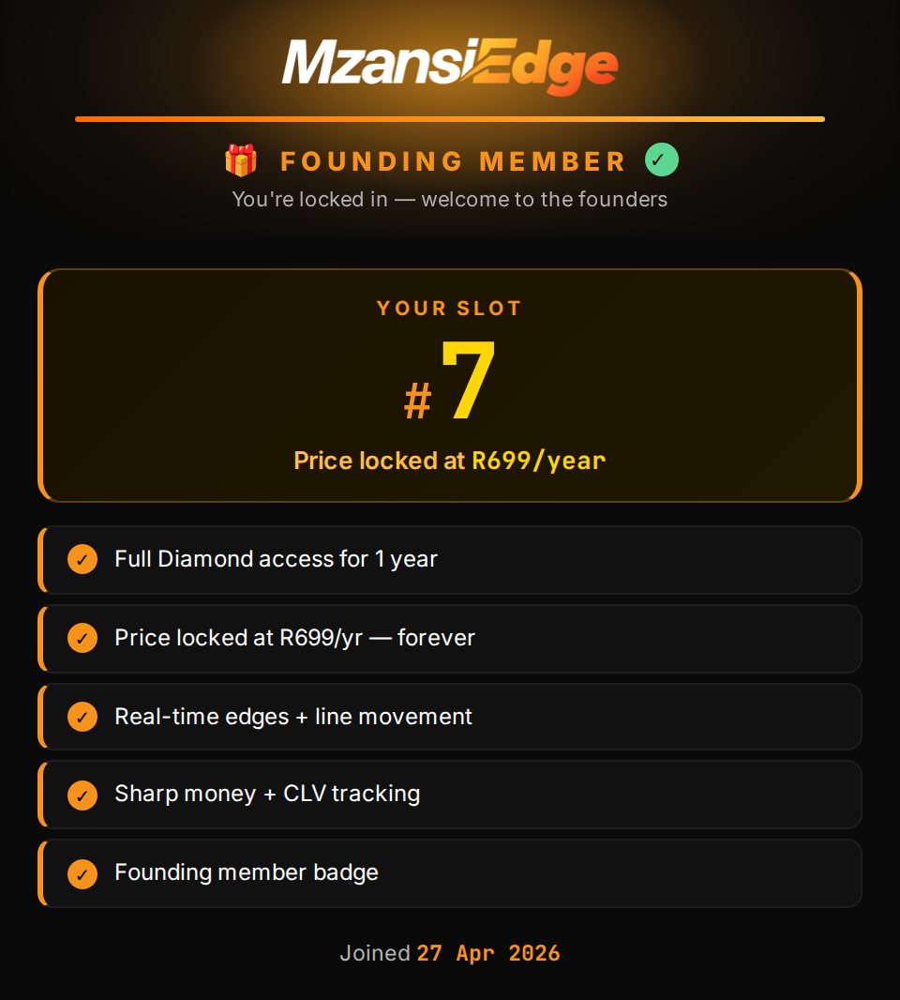
Founding-offer-ended pivot card. Sent when a user attempts to access the founding offer after the campaign window has closed (time-based, not slot-based). The card pivots them toward Diamond at regular pricing. Diamond cyan glow establishes the new target. Hero block uses neutral-grey accent (the offer is gone — no orange urgency). Pricing card with cyan accent shows Diamond monthly + annual. No alarm-clock emoji. No footer.
Design notes
- Glow type: diamond cyan (the new target). Pivots the user from "the deal you wanted" toward "still the best plan available".
- Removed prod ⏰ alarm-clock emoji: same reasoning as
sub_expiry_notice— the alarm-clock semantics felt punitive and off-brand. Replaced with a 🎁 gift emoji on a neutral-grey hero block. - Hero block — grey accent (calm, not urgent): the offer is closed; there's no urgency to manufacture. Grey left-border + soft grey wash communicates "the moment has passed" without panic.
- Pricing card with cyan accent: Diamond left-border + soft cyan wash. 14px header "Diamond — Current Pricing". Two rows: monthly + annual with "save 33%" pill on annual.
- Subline carries the pivot: "Diamond access still available at the regular price" — manages expectations on the title alone.
- No footer per universal §7.
Implementer agent — targets
- Replace
bot/card_templates/sub_founding_ended.htmlwith the canonical (lift from/tmp/sub_founding_ended_canonical.html). Insert cyan.logo-glow+.logo-glow-screen; remove the standalone 36px ⏰ icon and replace with 🎁 in a contained.hero-block(grey left-border + soft wash); add subline; replace prod's bordered.pricing-cardwith cyan-left-border + soft wash recipe + row-based pricing layout. bot/card_data_adapters.py:build_sub_founding_ended_dataalready emits the right shape (diamond_monthly,diamond_annual). No data-side changes needed.- Acceptance:
latest/sub_founding_ended.pngmatchescanonical/sub_founding_ended_canonical.png. Cyan logo glow visible. Hero block with grey accent + 🎁 (no ⏰). Pricing card with cyan left-border. No footer.
Founding-offer-soldout pivot card. Distinct from sub_founding_ended by trigger:
sold-out fires when 100/100 slots are claimed (scarcity); ended fires when the
time window closes (deadline). Same pivot destination — Diamond at regular pricing.
Closes Batch 6. The slot meter visualises the "100/100 claimed" scarcity in a contained card. Same
diamond-cyan glow as sub_founding_ended. No footer.
Design notes
- Glow type: diamond cyan (the new target). Same recipe as
sub_founding_ended. - Slot meter — visualises the scarcity: contained card with "Founding slots claimed" label + 100/100 count + 100% red→orange progress fill. Replaces just-text "100 slots taken" copy with a visual proof.
- 100/100 count in red mono:
#FF7777JetBrains Mono — reads as "everyone got there before you". - Removed prod ⏰ alarm-clock emoji: same as Wave X. 🎁 in a grey-accent hero block instead.
- Pricing card "Still Available": subtitle reads "Diamond — Still Available" (vs "Current Pricing" on Wave X). Reinforces that something IS still on offer, just not the founding deal.
- No footer per universal §7.
Implementer agent — targets
- Replace
bot/card_templates/sub_founding_soldout.htmlwith the canonical (lift from/tmp/sub_founding_soldout_canonical.html). Insert cyan.logo-glow+.logo-glow-screen; remove the standalone 36px ⏰ icon and replace with 🎁 hero-block; add subline; insert a new.slot-metercontained card with red-orange 100% progress fill + 100/100 count in red mono; pricing card with cyan accent + "Still Available" subtitle. bot/card_data_adapters.py:build_sub_founding_soldout_dataalready emits the right shape (justheader_logo_b64; pricing is hardcoded at the canonical level). No data-side changes needed.- Acceptance:
latest/sub_founding_soldout.pngmatchescanonical/sub_founding_soldout_canonical.png. Cyan logo glow visible. Hero block with grey accent + 🎁 (no ⏰). Slot meter at 100% red-orange fill. Pricing card "Still Available". No footer.
Cancellation pre-confirmation card. Opens Batch 7 — Subscription cancel/exit. Last-chance moment before the user confirms cancellation. Brand-orange logo glow with an inline amber "!" glyph in the title. Confirm block uses amber accent (warning, not failure — they haven't cancelled yet). Lose list uses red-circle ✕ markers (genuine loss, not soft caution). Access-until row reassures the user their paid period continues. Calibrated to make cancellation a deliberate action, not a tap-and-regret. No footer.
Design notes
- Glow type: brand-orange (non-tier surface — applies to anyone). Amber + red are reserved as semantic accents.
- Inline amber "!" glyph:
#FFBE45circle with white "!". Amber is the "are you sure?" semantic — not red (which says "this failed") and not green (which says "this succeeded"). Matches the inline-glyph pattern across the success/error pair. - Confirm block — amber accent: amber left-border + amber-tinted background + 28px amber circle "!" + bold title + dim sub. Replaces prod's flat ⚠️ emoji with an SVG-style glyph that renders consistently.
- Lose list — red ✕ markers: 16px red circles + red left-border on each row. Same pattern as
sub_trial_expiry's "What you've lost" — but using the marker AS the bullet for stronger visual loss-aversion (cancel surface needs more friction than trial-expired). - Access-until row: contained card with JetBrains Mono date. Reassures continued paid access — softens the cancel decision so it feels less binary.
- Removed prod ⚠️ standalone emoji: replaced by the amber-circle "!" glyph in the confirm block. Consistent with the glyph treatment across the subscription set.
- No footer per universal §7.
Implementer agent — targets
- Replace
bot/card_templates/sub_cancel_confirm.htmlwith the canonical (lift from/tmp/sub_cancel_confirm_canonical.html). Insert brand-orange.logo-glow+.logo-glow-screen; add inline amber "!" glyph to title; add subline; replace prod's flat ⚠️ emoji block with the contained.confirm-block(amber circle glyph + amber left-border + glow); restyle.lose-listwith red-circle ✕ markers + red left-border + dark-red background tint; add the access-until row. bot/card_data_adapters.py:build_sub_cancel_confirm_dataalready emits the right shape (plan_name,access_until). No data-side changes needed.- Acceptance:
latest/sub_cancel_confirm.pngmatchescanonical/sub_cancel_confirm_canonical_gold_monthly.png(or_diamond_annual.pngby plan). Brand-orange logo glow + inline amber "!" glyph in title. Amber confirm block with circle "!" glyph (no ⚠️ emoji). Red ✕ markers on lose-list. Access-until row. No footer.
Cancellation success card. Sent immediately after the user confirms cancellation. Bittersweet surface — the action succeeded (green tick) but the user reverted to Bronze (bronze tier accent). Hero block with bronze left-border + 36px green tick circle + "Subscription cancelled" headline. "Now on" Bronze block shows what they have. Optional access-until row when paid access continues. Friendly tone, no anti-churn messaging, no re-subscribe shaming. No footer.
Design notes
- Glow type: brand-orange (non-tier surface). Bronze accent on the hero + now-on blocks carries the new tier identity.
- Title with green tick: 18px green circle ✓. Confirms the action succeeded (this is a state change, not a failure).
- Hero — green tick + bronze left-border: 36px green tick circle (success) + bronze left-border + soft bronze wash. The hybrid colour signals "the cancel succeeded AND you're now on Bronze".
- Re-subscribe in soft text:
/subscribeas orange code-pill inside the hero-sub. No pushy "RE-SUBSCRIBE NOW" CTA — that would feel like the bot didn't accept the user's decision. - "Now on" Bronze block: bronze left-border + bronze wash + 🥉 emoji + "Bronze — Free" header + plan-detail line ("3 tips per day · 24h delayed edges · basic match analysis"). Helps the user understand exactly what they still have.
- Access-until row (conditional): only shows when
access_untilis set. JetBrains Mono date. Explicit reassurance that paid access doesn't end immediately. - No footer per universal §7.
Implementer agent — targets
- Replace
bot/card_templates/sub_cancel_done.htmlwith the canonical (lift from/tmp/sub_cancel_done_canonical.html). Insert brand-orange.logo-glow+.logo-glow-screen; add inline green-circle tick to title; add subline; build the hero-block with 36px green tick + bronze left-border + soft bronze wash; build the now-on block with bronze accent + plan detail; add conditional access-until row. bot/card_data_adapters.py:build_sub_cancel_done_dataalready emits the right shape (access_until). No data-side changes needed.- Acceptance:
latest/sub_cancel_done.pngmatchescanonical/sub_cancel_done_canonical_with_access.pngwhenaccess_untilis set,_no_access.pngwhen empty. Brand-orange logo glow + inline green tick. Hero with 36px green tick + bronze accent. Bronze "Now on" block. No footer.
Email-capture redirect card. Sent at the start of the subscribe flow when the user needs to provide their email for Stitch payment setup. Closes Batch 7 — Subscription cancel/exit (Batch 7 contained the cancel pair and this email-capture pivot, all "exit-or-into-checkout" flows). Brand-orange logo glow + envelope hero in a circle chip + reply-instruction CTA with internal orange glow. No footer.
Design notes
- Glow type: brand-orange (non-tier surface — applies to anyone in the subscribe flow).
- Header changes from prod: removed
linear-gradientbackground andborder-bottom. Subline added: "One step from setting up your subscription". - Hero block — circle envelope chip: 44px orange-tinted circle with 22px ✉️ inside, replacing prod's 40px standalone emoji. Cleaner, more "icon" than "emoji-art".
- Reply hint with internal glow: orange left-border + soft orange glow + bold "Reply" + amber surround copy. Prod had a flat tinted box — canonical adds depth.
- No footer per universal §7.
Implementer agent — targets
- Replace
bot/card_templates/sub_email_redirect.htmlwith the canonical (lift from/tmp/sub_email_redirect_canonical.html). Insert brand-orange.logo-glow+.logo-glow-screen; add subline; replace standalone 40px ✉️ emoji with circle-chip pattern in a contained.hero-block; restyle.reply-hintwith internal-glow recipe. bot/card_data_adapters.py:build_sub_email_redirect_dataneeds no fields beyondheader_logo_b64. No data-side changes needed.- Acceptance:
latest/sub_email_redirect.pngmatchescanonical/sub_email_redirect_canonical.png. Brand-orange logo glow visible. Envelope in circle chip (no standalone emoji). Reply hint with orange-glow recipe. No footer.
Welcome card — first surface a user sees in onboarding. Opens Batch 8 — Onboarding core (8 cards). Brand-orange logo glow header + "Hey {name} 👋" greeting + tagline + 3 feature rows with orange left-border accent + closing "Takes about 2 minutes to set up" CTA line. Trial + founding-member badges (when active) sit in a row above features. Returning-user variant swaps greeting and title. No footer.
Design notes
- Glow type: brand-orange (welcome is the universal first impression — every tier funnels through this card).
- Header changes from prod: removed
linear-gradientbackground andborder-bottom. Subline reads "AI-powered sports betting edge". - Greeting at 22px: bold white with letter-spacing -0.5px. Replaces prod's same-size approach but tightens letterspacing for the larger display weight.
- Trial / founding badges: green-tinted badge for trial, orange-tinted badge for founding. Replaces prod's same-style badge with semantic colour separation — trial is "free thing" (green positive), founding is "premium offer" (orange premium).
- Feature rows with orange left-border: 3 feature rows in contained cards with orange 3px left-border + emoji + bold title + 11px description. Replaces prod's flat row layout — adds the canonical accent treatment.
- CTA line with orange highlight: "Takes about 2 minutes…" with the duration in orange. No border-top divider (prod had one — read as a footer).
- No footer per universal §7.
Implementer agent — targets
- Replace
bot/card_templates/onboarding_welcome.htmlwith the canonical (lift from/tmp/onboarding_welcome_canonical.html). Insert.logo-glow+.logo-glow-screen; add subline; tighten greeting letterspacing; restyle.badge-trialgreen and.badge-foundingorange; rebuild.feature-rowwith orange left-border + 1px border + #111 bg; remove.dividerbottom-border above CTA line. bot/card_data_adapters.py:build_onboarding_welcome_dataalready emits the right shape (first_name,is_returning,trial_started,trial_days,founding_offer,founding_days_left). No data-side changes needed.- Acceptance:
latest/onboarding_welcome.pngmatchescanonical/onboarding_welcome_canonical_fresh.pngfor fresh users,_trial.pngwhen trial+founding active. Brand-orange logo glow + 3 feature rows with orange left-border. No border-top above CTA. No footer.
Step 1 of 5 — experience-level selection. First step in onboarding question flow. Establishes the step-progress dots pattern reused across the 5-step onboarding sequence: 5 small pills (16×4px) where the active step is orange, prior steps are also orange (done), upcoming steps are grey. "STEP 1 OF 5" label sits to the right. 3 option rows (experienced / casual / newbie) with emoji + label + descriptive caption. No footer.
Design notes
- Step-progress dots pattern: 5 × 16×4px pills, active = orange, done = orange, upcoming = grey. Reusable across
onboarding_experience+onboarding_sports+onboarding_favourites_manual+ futureonboarding_risk+onboarding_notify. Replaces prod's "STEP 1 OF 5" plain-text indicator with a visual progress affordance. - Header changes from prod: removed
linear-gradientbackground andborder-bottom..step-badgeplain-text replaced by progress-dots row. - Question + hint: 17px bold question (was 16px) — slightly larger for stronger anchoring. 12px hint underneath in secondary text.
- Option rows: 22px emoji + bold label + 11px description. Grey left-border (3px) on the unselected state — sets up the
.selectedclass to swap to orange-3px-left-border + soft wash. Same row pattern asonboarding_sports. - No footer per universal §7.
Implementer agent — targets
- Replace
bot/card_templates/onboarding_experience.htmlwith the canonical (lift from/tmp/onboarding_experience_canonical.html). Insert.logo-glow+.logo-glow-screen; replace plain.step-badgediv with the.step-progressdots row + label; restyle.optionwith grey 3px left-border + #111 bg; tighten question to 17px bold. bot/card_data_adapters.py:build_onboarding_experience_dataalready emits the right shape (options[]). No data-side changes needed.- Acceptance:
latest/onboarding_experience.pngmatchescanonical/onboarding_experience_canonical.png. Brand-orange logo glow + step-progress dots (1st orange, 4 grey) + "STEP 1 OF 5" label. 3 options with grey left-border. No footer.
Step 2 of 5 — sport selection. Multi-select grid for the 4 sport categories (soccer, rugby, cricket, combat). Step-progress dots show steps 1+2 as done/active. Selected-count chip with orange left-border + bold count. Sport rows toggle between unselected (grey left-border + empty circle) and selected (orange left-border + orange wash + orange-circle ✓ glyph). No footer.
Design notes
- Glow type: brand-orange. Step-progress dots pattern from Wave AD continues.
- Selected-count chip: orange left-border + 1px border + 3px padding-y + 10px padding-x + bold "{N} selected". Replaces prod's bare orange text — now framed and consistent with the chip pattern across the canonical set.
- Sport rows — selection states: unselected = grey 3px left-border + grey empty circle (22px ring); selected = orange 3px left-border + soft orange wash + orange-circle ✓ glyph (22px circle filled with orange). Replaces prod's hollow square checkbox with a circular tick — matches the success-glyph pattern across the canonical set.
- Tap target unchanged: 12px×14px padding keeps row hit-area generous on mobile.
- No footer per universal §7.
Implementer agent — targets
- Replace
bot/card_templates/onboarding_sports.htmlwith the canonical (lift from/tmp/onboarding_sports_canonical.html). Insert.logo-glow+.logo-glow-screen; replace plain.step-badgewith.step-progressdots + "Step 2 of 5" label; restyle.selected-countas orange-left-border chip; restyle.sport-rowwith grey 3px left-border default + orange selected state; replace square.sport-check-emptywith 22px circular ring + orange-circle ✓ glyph for selected. bot/card_data_adapters.py:build_onboarding_sports_dataalready emits the right shape (sports[],selected_count). No data-side changes needed.- Acceptance:
latest/onboarding_sports.pngmatchescanonical/onboarding_sports_canonical_one_selected.pngwith 1 selected,_three_selected.pngwith 3. Step-progress dots (2 active+done, 3 grey). Selected-count chip with orange accent. Orange-circle ✓ glyphs on selected rows. No footer.
Step 3 of 5 — favourite teams via text input. This is the actual primary flow at Step 3/5
— the user does NOT pick teams from a list; they TYPE comma-separated team names and the bot fuzzy-matches
them. Confirmed via Telethon capture against @mzansiedge_bot on 2026-04-27. Header iterates
per sport (sport-context emoji + name). Body has the typing instruction + green "type your answer in the
chat below" CTA + an example box showing valid input format. After typing, the user sees
onboarding_team_celebration.html with their matched teams and per-team cheers (next section).
No footer.
Design notes
- Glow type: brand-orange.
- Header — sport-context: same step-progress dots pattern (3 done/active, 2 grey) + sport emoji + name. Same architecture as Wave AE (sports) but the title slot is replaced by the current sport's identity.
- Type-here CTA — GREEN accent:
#5DD68Fleft-border + soft green wash + green "Type your answer in the chat below ↓" + ⌨️ keyboard glyph. Green is the canonical "do this now" affordance — same hue as the green tick on success affirmations (sub_payment_confirmed,sub_billing_active) but used here for an actionable instruction. - Example box — neutral grey accent: secondary helper info, not the action.
EXAMPLElabel in 9.5px secondary-grey + 12px white sample text. Replaces prod's flat tinted box. - Why the list-with-buttons depiction was wrong: prod's
onboarding_favourites.htmltemplate (list-with-buttons) is reachable only via a deprecatedob_fav_backcallback path. The PRIMARY entry to Step 3/5 is_show_next_team_promptwhich rendersonboarding_favourites_manual.html. User types, fuzzy-match runs, matched teams display in the celebration card. There is no real "list-with-buttons" UX in modern onboarding. - No footer per universal §7.
Implementer agent — targets
- Replace
bot/card_templates/onboarding_favourites_manual.htmlwith the canonical (lift from/tmp/onboarding_favourites_manual_canonical.html). Remove gradient header background + border-bottom; insert.logo-glow+.logo-glow-screen; replace plain.step-badgewith.step-progressdots + "Step 3 of 5" label; restyle.chat-directiveas the green-accent.type-cta(left-border + soft glow + ⌨️ glyph); restyle.example-boxwith neutral grey left-border. - Optional follow-up: deprecate
bot/card_templates/onboarding_favourites.html(the list-with-buttons template). It's only reachable via theob_fav_backdeprecated callback path. If kept, it should also follow the canonical patterns — but better practice is to remove the template + thehandle_ob_fav_backhandler entirely. bot/card_data_adapters.py:build_onboarding_favourites_manual_dataalready emits the right shape (sport,fav_label,example). No data-side changes needed.- Acceptance:
latest/onboarding_favourites_manual.pngmatchescanonical/onboarding_favourites_manual_canonical_soccer.png. Brand-orange logo glow + step-progress dots (3 done/active, 2 grey) + sport-context header. Green type-here CTA with ⌨️. Grey example box. No footer.
The dynamic team list Paul referenced — sent immediately after the user types their team
names at Step 3/5. The bot fuzzy-matches each name and displays them as bordered rows with green tick +
team name + per-team cheer (Amakhosi! Come on you Gunners! YNWA!). Unrecognised names render in an
amber-accented "Not recognised" section. Summary line at the bottom shows "{N} teams added". Continue
and Try Again buttons follow (handled by Telegram's inline keyboard, not visible here).
No footer.
Design notes
- Glow type: brand-orange.
- Header — sport emoji big + "NICE PICKS!": 26px sport emoji block-displayed above 15px tracked white "NICE PICKS!" headline. Combat sport gets "WAR ROOM LOADED!" instead per
build_onboarding_team_celebration_data. - Matched rows — green left-border + green-circle tick: 18px green-circle ✓ glyph (same recipe as success-affirmation across the canonical set) + 14px team name + 12px cheer line. Every matched team gets a per-team cheer from
_get_team_cheer(TEAM_CELEBRATIONS dict, with sport-context overrides). - Unmatched section — amber accent: amber left-border + amber-tinted bg + 18px amber-circle "!" glyph. Distinct semantic from red ✕ (cancel-confirm lose-list): unmatched isn't a failure, it's "couldn't find this — try again or skip". Calmer tone.
- Summary line: centred bold "{N} teams added" with N highlighted in orange. No border-top divider (prod had one — read as a footer).
- This IS the dynamic list update: the user types names, the bot matches them, and this card shows the running list. For a 2nd batch of teams (user types more), the bot re-renders this card with the combined list.
- No footer per universal §7.
Implementer agent — targets
- Replace
bot/card_templates/onboarding_team_celebration.htmlwith the canonical (lift from/tmp/onboarding_team_celebration_canonical.html). Remove gradient header background + border-bottom; insert.logo-glow+.logo-glow-screen; rebuild.matched-rowwith green left-border + 18px green-circle ✓ glyph (replaces flat ✅ emoji); rebuild.unmatched-rowwith amber left-border + 18px amber-circle "!" glyph (replaces flat ⚠️ emoji); remove.dividerbottom-border above.summary; restyle summary line with orange-highlighted count. bot/card_data_adapters.py:build_onboarding_team_celebration_dataalready emits the right shape (matched[],unmatched[],sport_emoji,header_text,summary_line). No data-side changes needed.- Acceptance:
latest/onboarding_team_celebration.pngmatchescanonical/onboarding_team_celebration_canonical_soccer.pngwhen only matched teams,_with_unmatched.pngwhen there are unrecognised entries. Brand-orange logo glow. Green-tick matched rows with cheers. Amber unmatched rows. No border-top above summary. No footer.
"Did you mean?" disambiguation card. Sent during favourites text-input flow when fuzzy matching produces multiple plausible candidates and the bot wants the user to confirm. Uses an amber accent — not red (no failure), not green (no success) — signalling "we need a quick clarification". Confidence pills with semantic colour: green dot for ≥90%, amber dot for ≥70%, grey dot for <70%. No footer.
Design notes
- Glow type: brand-orange (matches the rest of the favourites flow — manual, celebration).
- Header — sport context: emoji + "DID YOU MEAN?" (no step-progress dots since this is a sub-flow inside Step 3, not a top-level step).
- You-typed block — neutral grey accent: contained card with "YOU TYPED" label + italicised quoted input. Replaces prod's bare-text presentation.
- Suggestion rows — amber left-border:
#FFBE453px left-border on each suggestion. Amber semantic = "tap to confirm", not failure. - Confidence pills with coloured dots: green ≥90% (Strong), amber ≥70% (Likely), grey <70% (Possible). Replaces prod's flat-text confidence labels with glanceable signal-strength dots.
- No-suggestions empty state: italic helper copy in a contained grey card. "Try a different spelling or nickname."
- No footer per universal §7.
Implementer agent — targets
- Replace
bot/card_templates/onboarding_fuzzy_suggest.htmlwith the canonical (lift from/tmp/onboarding_fuzzy_suggest_canonical.html). Insert.logo-glow+.logo-glow-screen; restyle.you-typedblock as contained card with grey left-border; replace flat suggestion rows with amber-left-border variants; replace flat confidence labels with coloured-dot pills; restyle empty state in italic helper card. bot/card_data_adapters.py:build_onboarding_fuzzy_suggest_dataalready emits the right shape (sport,input,suggestions[]). No data-side changes needed.- Acceptance:
latest/onboarding_fuzzy_suggest.pngmatchescanonical/onboarding_fuzzy_suggest_canonical_with_matches.pngwhen there are suggestions,_no_matches.pngwhen empty. Brand-orange logo glow visible. You-typed block + amber-bordered suggestion rows + coloured-dot confidence pills. No footer.
"How Your Edge Works" educational card. Sent between Step 3 (favourites) and Step 4 (risk profile)
for casual + newbie users (experienced users skip this per _show_next_team_prompt).
Closes Batch 8 — Onboarding core. Brand-orange logo glow. Intro paragraph explains the Edge-AI in
product terms with bookmaker-count fix ("all major SA bookmakers" — same correction as
onboarding_welcome). 4 tier rows with tier-color left-border + soft tier wash. Pro-tip
at the bottom in green-accent contained card. No footer.
Design notes
- Glow type: brand-orange (multi-tier surface — explains all 4 tiers, doesn't favour one).
- Header changes from prod: removed
linear-gradientbackground andborder-bottom. Subtitle "Edge-AI — your unfair advantage" preserved. - Intro copy fix: prod said "5+ SA bookmakers" — replaced with "all major SA bookmakers" to match the canonical fix on
onboarding_welcome.strongtag highlights the phrase in orange. - Tier rows with tier-color glow: each tier row gets its own soft tier-wash + 3px tier-color left-border. Diamond cyan, Gold yellow, Silver grey, Bronze orange. Replaces prod's flat
border-left-only treatment with depth. - Pro-tip — green accent: contained card with green left-border + soft green wash + green "PRO TIP" label. Green = positive guidance / good practice. Distinct from the green type-here CTA on input cards.
- No footer per universal §7.
Implementer agent — targets
- Replace
bot/card_templates/onboarding_edge_explainer.htmlwith the canonical (lift from/tmp/onboarding_edge_explainer_canonical.html). Insert.logo-glow+.logo-glow-screen; update intro paragraph copy: "5+ SA bookmakers" -> "all major SA bookmakers"; restyle.tier-rowwith per-tier soft glow background; restyle.pro-tipwith green left-border + soft green wash recipe. bot/card_data_adapters.py:build_onboarding_edge_explainer_dataalready emits the right shape (tiers[]). No data-side changes needed.- Acceptance:
latest/onboarding_edge_explainer.pngmatchescanonical/onboarding_edge_explainer_canonical.png. Intro reads "all major SA bookmakers". Tier rows with per-tier soft glows. Green-accent pro-tip card. No footer.
Step 4 of 5 — risk profile selection. Opens Batch 9 — Onboarding finalise. 3 profile rows (Conservative / Moderate / Aggressive) with emoji + label + description + Min-edge EV badge. Selection state: orange left-border + soft orange wash + orange-circle ✓ glyph. Same step-progress dots pattern as other onboarding steps. No footer.
Design notes
- Glow type: brand-orange.
- Step-progress dots: 4 done/active, 1 grey + "Step 4 of 5" label.
- Profile rows: same selection pattern as
onboarding_sports+onboarding_favourites_manual. Grey 3px default, orange-3px-selected with soft wash. - EV badge — orange code-pill: "Min edge: ≥3% EV" rendered as JetBrains Mono pill with orange tint background. Replaces prod's flat coloured text — pill treatment matches the orange code-pill pattern used across the canonical set (e.g.
/subscribe, plan codes). - Orange-circle ✓ glyph for selected: replaces prod's hollow-square checkbox with circular tick. Matches the canonical selection pattern.
- No footer per universal §7.
Implementer agent — targets
- Replace
bot/card_templates/onboarding_risk.htmlwith the canonical (lift from/tmp/onboarding_risk_canonical.html). Insert.logo-glow+.logo-glow-screen; replace plain.step-badgewith.step-progressdots + "Step 4 of 5"; restyle.profile-rowwith grey 3px left-border default + orange selected state; restyle.profile-evas orange code-pill; replace square.profile-check-emptywith 22px circular ring + orange-circle ✓ glyph for selected. bot/card_data_adapters.py:build_onboarding_risk_dataalready emits the right shape (profiles[]withselectedflag). No data-side changes needed.- Acceptance:
latest/onboarding_risk.pngmatchescanonical/onboarding_risk_canonical_none_selected.pngwhen no profile selected,_moderate_selected.pngwhen Moderate is current. Step-progress dots (4 done/active, 1 grey). Orange code-pill EV badges. Orange-circle ✓ glyphs on selected row. No footer.
Step 5 of 5 — weekly bankroll selection. 2-column grid of preset amounts (R50 / R200 / R500 / R1,000) plus Skip + Custom escape options. JetBrains Mono price values. Optional green-accent "currently set" banner when the user is editing a previously-set amount. No footer.
Design notes
- Glow type: brand-orange.
- Step-progress dots: 5 done/active (all orange) + "Step 5 of 5" label. Note: the prod template hardcoded "STEP 4 OF 5" but the data builder passes
step=5. Canonical honours the data — this IS step 5 (last step before summary). - Currently-set banner: green left-border + soft green wash + green-circle tick + "Currently set to R200" with the rand value in JetBrains Mono. Replaces prod's flat green box.
- Amount cells — JetBrains Mono: 18px monospace value + 10.5px helper sub-line. Grey 3px left-border on amount cells; the Skip + Custom cells get a slightly dimmer treatment (grey font + sans-serif "Skip"/"Custom" instead of mono) to read as escape options, not preset values.
- No footer per universal §7.
Implementer agent — targets
- Replace
bot/card_templates/onboarding_bankroll.htmlwith the canonical (lift from/tmp/onboarding_bankroll_canonical.html). Insert.logo-glow+.logo-glow-screen; replace plain.step-badgewith.step-progressdots + "Step 5 of 5" label (read from datastep, not hardcoded); restyle.current-bannerwith green left-border + green-circle tick; restyle.amount-cellwith grey 3px left-border + tighten typography; add.amount-skip/.amount-customclasses for the dimmer escape-option styling. bot/card_data_adapters.py:build_onboarding_bankroll_dataalready emits the right shape (amounts[],current,step). No data-side changes needed. Bug noted: prod template hardcodes step number — fix that during implementation.- Acceptance:
latest/onboarding_bankroll.pngmatchescanonical/onboarding_bankroll_canonical_default.pngwhen no current value,_current_set.pngwhen an amount is set. Step-progress dots all orange (5 done/active). Green currently-set banner only when applicable. JetBrains Mono price values. Skip + Custom dimmer. No footer.
Custom-bankroll text input. Sent when the user taps "Custom" on onboarding_bankroll. Reuses
the same green type-here CTA pattern as onboarding_favourites_manual (consistent typing-prompt
affordance across onboarding). Optional red-accent validation-error block when the user submits an invalid
amount. Minimum-value badge in JetBrains Mono. No footer.
Design notes
- Glow type: brand-orange.
- Step-progress dots: same as
onboarding_bankroll(Step 5 of 5). - Type-here CTA — GREEN accent: same recipe as
onboarding_favourites_manual. Reusable affordance for any text-input prompt in onboarding. - Validation error — red accent: red left-border + soft red wash + 18px red-circle "!" glyph + dim-red error text. Same pattern as
sub_payment_error's confirm block but smaller (single-line). - Min-info badge: small contained pill with grey left-border + R{min} value in orange JetBrains Mono. Sets expectation without taking attention from the typing CTA.
- No footer per universal §7.
Implementer agent — targets
- Replace
bot/card_templates/onboarding_bankroll_custom.htmlwith the canonical (lift from/tmp/onboarding_bankroll_custom_canonical.html). Insert.logo-glow+.logo-glow-screen; replace plain.step-badgewith.step-progressdots + "Step 5 of 5" label; reuse.type-ctagreen-accent pattern fromonboarding_favourites_manual; add.error-blockwith red-circle "!" glyph (conditional onvalidation_error); add.min-infoorange-mono badge. bot/card_data_adapters.py:build_onboarding_bankroll_custom_dataalready emits the right shape (validation_error,min_value). No data-side changes needed.- Acceptance:
latest/onboarding_bankroll_custom.pngmatchescanonical/onboarding_bankroll_custom_canonical_clean.pngon first entry,_error.pngafter a failed submit. Green type-here CTA. Red error block with circle "!" glyph (only whenvalidation_erroris set). Orange-mono minimum badge. No footer.